1 Introduction
Following decades of low and stable inflation, the period from 2021 to 2024 marked a dramatic global surge in inflation and an unprecedented cycle of monetary tightening. As central banks responded with aggressive rate hikes, a puzzle emerged: housing markets across developed economies, though all subject to these global pressures, followed remarkably divergent paths. Why did U.S. house prices exhibit such resilience, while countries like Canada and Sweden experienced sharp corrections? This paper argues that a key to understanding this divergence lies in the institutional structure of national mortgage markets.
Our analysis is motivated by a collection of empirical facts. First, there is substantial cross-country heterogeneity in mortgage contracts: the U.S. is dominated by long-term fixed-rate mortgages (FRMs), while countries like Sweden, Canada, and the U.K. feature a much higher prevalence of adjustable-rate (ARMs) or shorter-term fixed-rate products. Second, using pre-pandemic data, we show that this heterogeneity matters for policy transmission: countries with a larger share of variable-rate mortgages exhibit stronger house price and output responses to identified monetary policy shocks. The Great Inflation provided a test of this mechanism, with the price resilience of the FRM-dominated U.S. standing in contrast to the corrections in ARM-dominated markets. Finally, U.S. household survey data from the NY Fed’s Survey of Consumer Expectations (SCE) reveals patterns consistent with a “housing lock-in” effect, where homeowners with low-rate mortgages became reluctant to move, suppressing market activity. Simultaneously, this implies an increased desire and expectation to move when monetary policy normalizes.
To formalize and quantify these channels, we develop a structural heterogeneous-agent model of the housing and mortgage markets. The model features key real and nominal frictions including incomplete markets and uninsurable idiosyncratic labor risk, a frictional housing market with directed search, and long-term nominal mortgage contracts that allow for default. The model is flexible enough to accommodate different mortgage regimes — fixed-rate, adjustable-rate, and hybrid systems — allowing us to conduct controlled counterfactual experiments. We calibrate the steady state of the model to match the pre-pandemic U.S. economy. Given the importance of housing and debt in the mechanisms we emphasize in this paper, the calibration pays close attention to matching the joint distribution of assets, housing wealth, and mortgage debt as well as moments characterizing household price-posting behavior and selling patterns.
We then use this model as a laboratory to run our main experiment: simulating the Great Inflation episode across our four focus countries (U.S., U.K., Sweden, and Canda). We do so by exogenously feeding in country-specific paths for inflation, the risk-free and mortgage rate, incomes and transfers. Our analysis yields four main findings. First, we show that monetary policy transmitted through mortgage rates was a primary driver of the U.S. housing cycle, with our decomposition attributing 45% of the house price boom to the initial pandemic-era rate cuts.
Second, we demonstrate that differences in mortgage market structure can explain a substantial portion of the cross-country divergence in house prices. The model correctly predicts that ARM-dominant economies like Sweden would experience larger busts, while the FRM regime in the U.S. generates pronounced price persistence due to a powerful lock-in effect. We show that for each country incorporating accurate mortgage arrangements (relative to counterfactual specifications) improves model fit to observed price declines by 50% on average. Validating this channel, the model’s predictions for household behavior—such as declining expected tenure and falling transaction volumes—align remarkably well with survey and time on the market data in the U.S.
Third, these aggregate dynamics have profound distributional consequences. We show that low-income homeowners were the largest beneficiaries of the initial low-rate environment. In FRM regimes, where homeowners were shielded from rising rates, these welfare gains proved remarkably persistent. Renters, in contrast, generally experienced welfare losses as rising house prices reduced housing affordability, highlighting the equity tradeoffs of monetary policy operating through the housing channel.
Finally, our findings have direct implications for optimal monetary policy. We conduct a counterfactual policy experiment where we compare two strategies for fighting inflation: a “short and sharp” tightening versus a “long and gradual” one. We find that the preferred policy path is regime-dependent. The welfare costs of monetary tightening are generally larger in ARM regimes, where households are more directly exposed to rate hikes. Furthermore, FRM-dominant economies benefit significantly from a shorter and more aggressive tightening schedule, which minimizes the time that constrained homeowners are at risk of losing their valuable low-rate mortgages due to idiosyncratic shocks.
Related literature. Our paper contributes to several strands of literature. Firstly, we build on a rich body of work examining the role of housing in monetary policy transmission. Berger et al. (2021) is an important reference in this area as they study path dependency in monetary policy due to fixed rate mortgages. Key for their story is a path of lower mortgage rates. We document a similar channel, but our analysis features a richer housing sector and mortgage market. Other prominent examples in this literature include Garriga et al. (2017), Greenwald (2018), Hedlund (2019), Garriga and Hedlund (2020) and Eichenbaum et al. (2022). The key contribution of our work is to study the application to the Great Inflation, a period of extreme movements in inflation and mortgage rates. Recently, Fonseca et al. (2025) paper study mortgage lock-in using a spatial model in the context of rising rates. They present evidence that mortgage lock-in can actually increases prices, due to lower supply.1 We find FRMs reduce the size of house price declines and account for persistently high prices in the U.S.. However, we do not find increased prices from the lock-in effect in the pandemic period. We consider their paper complimentary to our research. Our analysis differs importantly from much of the housing literature as we stress the importance of search in the housing market. Other examples of papers that have stressed housing search include Ngai and Tenreyro (2014), Eerola and Maattanen (2018), Ngai and Sheedy (2020), Diaz et al. (2023) and Ngai and Sheedy (2024). 2
Our modeling of different mortgage regimes relates to studies of mortgage design and household risk exposure. A seminal contribution in the analysis of ARMs versus FRMs is Campbell and Cocco (2003), who characterized the different risk properties of the two types of contracts. They find ARMs generally dominate, except for risk-averse households and find significant welfare gains for inflation-indexed FRMs.3 In a sophisticated heterogeneous agent life cycle setting with default, Guren et al. (2021) show convertible FRMs can lower consumption volatility and default substantially. The main insight is that consumers prefer pro-cyclical mortgage payments. In our analysis, we take the design of mortgages as given and investigate the implications in the recent episode, and across country, of mortgage arrangements for macroeconomic volatility. We focus on the welfare implications of FRMs versus ARMs in the Great Inflation episode. This is a particularly relevant application, as FRMs were introduced in part to encourage stability in the housing market during the post-war period as a response to the Great Depression (Chambers et al. (2014)). We also study the monetary policy implications of different mortgage regimes.
A small literature has studied the role of mortgage market arrangements for the transmission of monetary policy. The foremost contributions are Calza et al. (2013), Corsetti et al. (2021), and Koeniger et al. (2022). Much of this work has focused on the effect on output and consumption. Consistent with our findings, this literature has typically found monetary policy shocks have stronger effects in variable rate mortgage environments. Our contribution is the focus on house price under high frequency identification. In concurrent work, Choi et al. (2025) highlight the asymmetric effect of FRM to ARM switching on monetary policy which they describe as a call option. Finally, a closely related study is Di Maggio et al. (2017) who use variation in interest rate resets due to the transitioning of FRMs to ARMs to study the implications for consumption and defaults.
Our focus on recent inflation dynamics connects to emerging work on the causes and consequences of the post-pandemic inflation surge (for an overview see: Bolhuis et al. (2022), Fornaro and Romei (2022), Blanchard and Bernanke (2024), Clarida (2025)). A few papers have considered implications for the housing market. A leading example is Bianchi et al. (2024) who considers optimal policy in a New Keynesian model, suggesting monetary policy should look through housing inflation. Our contribution is different. We try to explain the implications for house price dynamics during this episode, both in the U.S. and across other economies.
The remainder of the paper is structured as follows. Section 1 outlines the empirical facts that motivate our study. In Sections 2 and 3 we introduce our structural model and calibration strategy. In Sections 5 and 6 we present our main quantitative results comparing house price dynamics and monetary policy transmission across different mortgage regimes as well as welfare implications. Section 7 discusses broader implications for monetary policy and financial stability. We conclude in Section 8.
2 Motivating Empirical Evidence
2.1 Great Inflation house prices
Our analysis examines four countries that represent the diverse house price dynamics observed during the Great Inflation while capturing the range of mortgage market structures prevalent across advanced economies: the U.S., Canada, Sweden, and the U.K.4 Figure 1 illustrates the housing price trajectories for these countries throughout the Great Inflation period. During the 2020-21 house price expansion, the U.S. and Canada experienced the most substantial appreciation, while Sweden and the U.K. recorded increases approximately half as large. The subsequent correction phase reveals striking heterogeneity: Sweden and Canada exhibited the most pronounced price declines, whereas the U.S. demonstrated remarkable resilience, with only moderate price adjustments despite aggressive monetary tightening beginning in 2022. Sweden’s experience proves particularly notable, with prices declining substantially below their 2019 baseline levels.
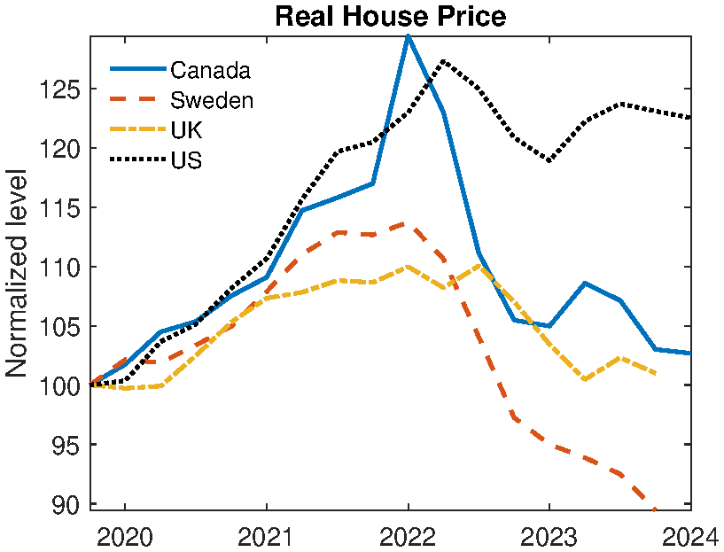
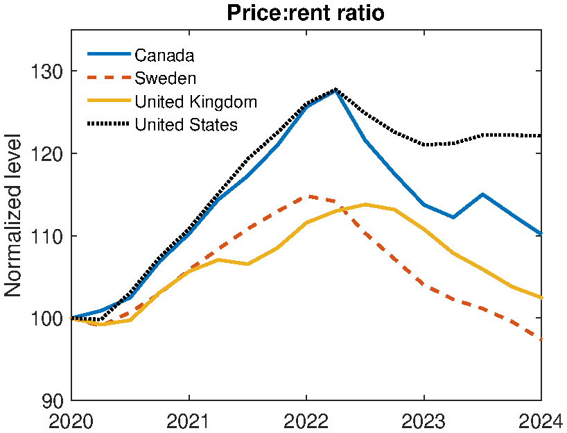
Notes: U.S. house price from Case-Schiller. Other countries from BIS. Price-rent ratio from OECD.
Crucially, Panel B demonstrates that these dynamics reflect genuine housing market phenomena rather than broader trends in the service flow of housing. The price-to-rent ratio exhibits significant increases across all four countries, confirming that the observed patterns primarily stem from house price movements rather than rental market adjustments. This highlights the key link from these house price movements to mortgage rates and the monetary policy stance.
2.2 Cross country mortgage markets
Outside of the U.S.—where more than 90% of the mortgages are fixed rate— there is significant variation in the structure of mortgage markets. Thirty year fixed rate mortgage are far less common. Figure 2 plots the share of new loans accounted for by mortgages of differing fixed rate horizons for our three main comparison countries: Canada, Sweden and the U.K.. The data for Canada is from the Bank of Canada, the data for Sweden and the U.K. is from the European Mortgage Federation. The overall picture is one of significant heterogeneity. In Canada prior to 2020, the dominant form of mortgage was a fixed rate duration of longer than five years (Panel a). In the U.K., the mortgage market has recently been dominated by mortgages of one to five year duration (Panel b). In contrast, in Sweden, variable rate mortgages (which include mortgages of fixed duration of less than one year) is the most widespread product (Panel c).
Cross-country variation in the typical mortgage duration is best thought of an exogenous variable, due to institutional features of the financial sector, for example. However, in most countries the mortgage product is also to some extent a choice variable. This can lead to variation in the average duration of new mortgages over time within a country. In our three comparison countries this is most visible for Canada. Just prior to and at the onset of the pandemic there was an uptick in the share of longer duration mortgages. Demand for these reduced in 2021, with variable rate mortgages becoming more common. This peaked in 2022, just prior to the rate tightening. As rates began to rise, three-to-five year duration mortgages became more common. While less extreme, Sweden and the U.K. also exhibited a shift towards variable rate mortgages in 2022.
Finally, we can summarize these shares as an expected duration of mortgage length. To do this we assign an average length to each share and compute the expected duration. Sweden has the lowest typical duration of 1.6 years on average. Next is the U.K.: 2.7 years and Canada 3 years. Canada’s expected duration is the most volatile.5 We will use these targets in the calibration of our quantitative model in Section 4.
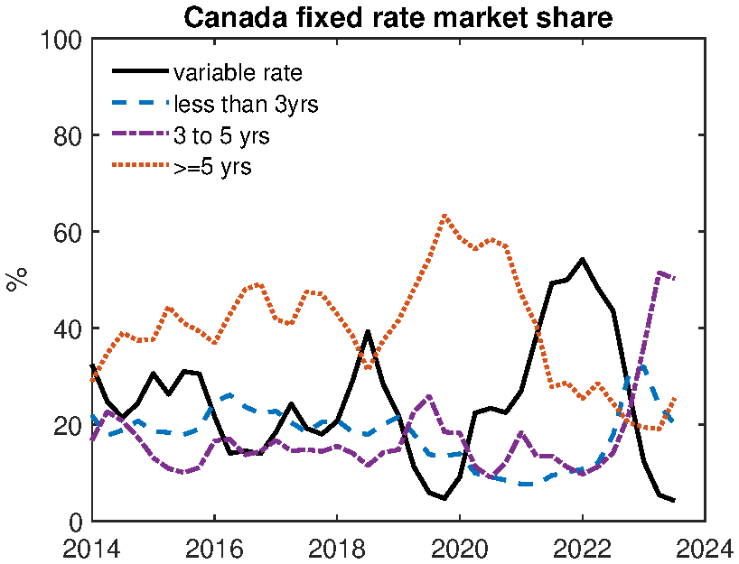
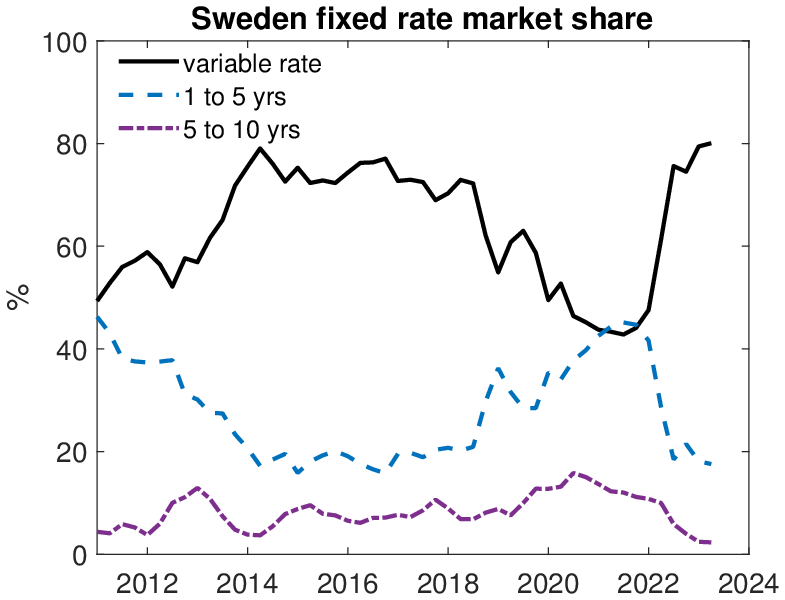
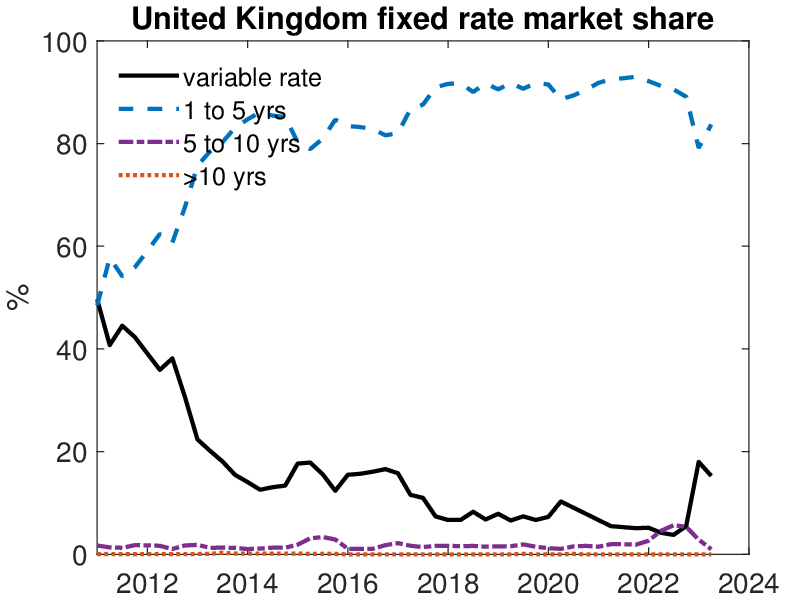
Notes: Measure is shares of new loans issued. Data for Canada from Bank of Canada. Data for Sweden and U.K. from European Mortgage Federation (EMF).
2.3 Mortgage market and the transmission of monetary policy
Next we study the implications for monetary policy of the mortgage market structure. In particular, we compare how the share of variable rate mortgages in an economy affects its response to plausibly exogenous monetary policy shocks. Our analysis follows Almgren et al. (2022). They use local projections for Euro area countries to a shared monetary policy shock, to compare the output responses across countries to the hand to mouth share of households. Here we focus on the how output and house prices response to a monetary policy shock vary with the variable mortgage rate share. We use high-frequency monetary policy shocks identified around a short window around the monetary policy announcement (Nakamura and Steinsson (2018), Gertler and Karadi (2015)). This provides exogenous variation the interest rate not associated with the outcome variables. The benefit of the cross country specification is that by focusing on Euro area countries experiencing a common shock, we are comparing the response to a consistent set of shock sizes and directions which otherwise might interact with non-linearities.6 The underlying assumption is that the high frequency monetary policy shocks are uncorrelated with other shocks in the economy that affect output and house prices. Of course variation across countries in the mortgage markets could be correlated with the true driver of cross country response variation.
Specification. The specification follows Jorda (2005) and Stock and Watson (2018). We estimate a local projections instrumental variables (LPIV) model. For each country \(n\) we estimate impulse response functions with the following set of \(h\) equations:
\[ \begin{aligned} y_{n,t+h}-y_{n,t-1} & =\alpha ^{h}_{n}+\beta ^{h}_{n}\hat{i}_{t}+\sum ^{p}_{j=1}\Gamma ^{h}_{n,j}X_{t-j}+u_{n,t+h}\\ i_{t} & =c+\rho Z_{t}+\sum ^{p}_{j=1}D^{h}_{n,j}X_{t-j}+e_{t} \end{aligned} \]
Equation (1) is the outcome equation of interest. The dependent variable \(y_{n}\) is either log GDP or the log real house price in country \(n\). The coefficients \(\beta ^{h}_{n}\) capture the impulse response of country \(n\) in period \(t+h\) to an interest rate shock in period \(t\). We also include a set of lagged controls \(X\).7 Equation (2) captures the implementation of the high frequency instrumental variables approach. The instrument is the change in the Euro Overnight Index Average (EONIA) in a 45 minute window around the monetary policy announcement.8
Our main outcome of interest is the maximum response: \(\max _{h}{\beta ^{h}_{n}\hat{i}_{t}}\) to an expansionary monetary policy shock, \(\hat{i}_{t}<0\) within a 30 month window.
Data. We run specifications at a monthly frequency. Output is real GDP interpolated to monthly observations with industrial production. For the monetary policy rate we use the Euro Overnight Index Average (EONIA). For the instrument we use changes in the EONIA Overnight Index Swap, which allows the buyer to exchange a fixed interest rate for the floating overnight rate and captures changes in expectations about monetary policy.We include a control for the price level with the Harmonized Consumer Price Index (HCPI). For real house prices we use the Bank of International Settlements real house price index. This is available at a quarterly frequency, so we interpolate to a monthly frequency with the CPI for rents. We estimate the local projections between 2000 and 2016 and compute the maximum response in the 30 months following the shock.9
For the share of variable rate mortgages we use data from the European Mortgage Federation and European Central Bank on the share of mortgage lending with a variable interest rate. This is defined as lending with a rate fixed for less than a year.10 For each country we take the average share of variable rate mortgages between 2000 and 2019. We then take the mean of the EMF and ECB share, although in practice these are highly correlated.
Results. The main result in Almgren et al. (2022) compares the peak output response to a 150 basis point cut in the monetary policy rate to the share of hand to mouth. Figure B.3 in the Appendix repeats this for the share of variable rate mortgages in a country. 11 We see a strong positive relationship. Euro area countries where variable rate loan mortgages are more common are associated with a stronger response to monetary policy. This is intuitive as the countries where monetary policy most quickly affects household’s borrowing in the mortgage market experience the largest output responses. The correlation is slightly less strong than that found between the peak output response and the hand-to-mouth share, as measured in the Eurosystem Household Finance and Consumption survey (0.78).
We now turn to the impact on the housing market. Figure 3 Panel a repeats the exercise for house prices. We see the average peak house price response to a monetary policy shock is of the same magnitude as the peak output response. Again we find evidence of a strong positive correlation between the share of variable loans at the peak house price response (0.55 for house prices versus 0.47 for output).
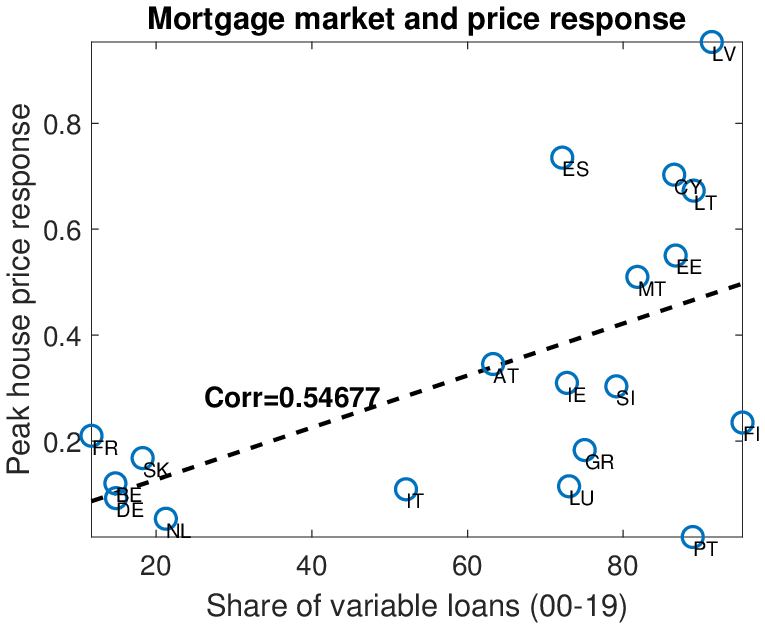
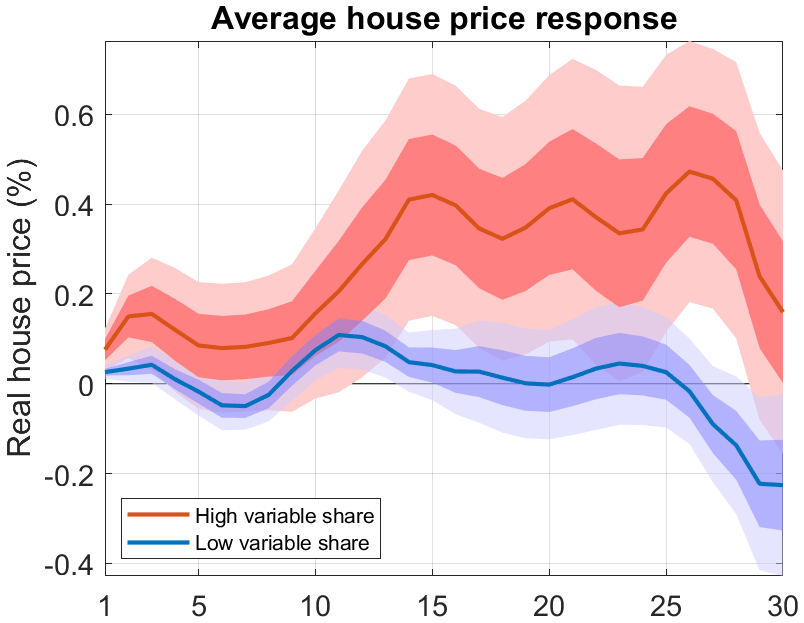
Notes: Panel a is peak response of LP-IV to high frequency monetary policy shock. Panel b is average across high and low variable rate share economies. House price from the BIS. Share of variable rate mortgages from EMF and ECB.
Panel a suggests that the set of countries that have a fairly low share of variable rate mortgages have a much smaller house price responses. We now partition the countries into two bins, above and below median share of variable mortgages. We average the outcomes across countries within these two groups and compute the impulse response for the composite.12 The results are presented in Panel c. The Figure confirms the correlation seen across countries. For low variable share countries on average the response to a monetary policy response is small, with a peak about one year are the shock. For high variable rate countries on average the response is much stronger, both on impact and after one year. The delayed response could reflect that in some countries variable rate mortgages are still fixed for some short horizon.
Overall the section has provided motivating evidence that adjustable or variable rate mortgages are a pervasive feature of many economies outside the U.S.. These mortgage differences are fairly stable across time, albeit households do change their mortgage choice in response to big shocks. The mortgage market seems important for the transmission of monetary policy. Within the Euro area, countries with a higher share of variable rate mortgages respond more strongly to monetary policy shocks. This effect is evident for both the output response and house price response.
3 Model
In this section, we develop a heterogeneous agents model with housing and mortgages. To investigate the interaction of monetary policy and housing markets, we include the following key ingredients: (1) a frictional housing market that endogenizes the price and liquidity of the housing market; (2) long-term nominal mortgages that generate nominal rigidity in household budget constraint; and (3) endogenous credit constraints and default risk.
The economy is populated by (i) a measure one of infinitely lived households, (ii) real estate brokers that facilitate transactions in the housing market, (iii) banks that issue long-term adjustable rate mortgages. Time is discrete.
Below, we present the details of the model. Wherever non-essential, the technical details and equations are relegated to appendix A.
3.1 Households
There is a continuum of infinitely lived households that are subject to uninsurable idiosyncratic labor productivity risk. Their labor productivity \(z_{t}\) follows an exogenous finite state Markov according to the transition matrix \(\Gamma (z_{t+1}\mid z_{t})\). Households have preferences over non-durable consumption \(c\) and housing services \(s\). Preferences are time-separable and the future is discounted at rate \(\beta\). The expected lifetime utility of a household is given by: {0}^{}{t=0}^{t-1}. We use the CES aggregator between the consumption and the housing services. The parameters \(\beta\), \(\sigma\), and \(\gamma _{h}\) measure the discount factor and relative risk aversion, and elasticity of substitution between consumption and housing services, respectively. \(\phi _{h}\) determines the share of housing services in total consumption.
The households enjoy housing services \(c_{h}\) either by owning and occupying a house or by renting from a competitive market in the form of apartment space. Owner-occupied housing comes in a set of discrete sizes, \(h\in\mathcal{H}=\left \{h_{1},h_{2},...h_{n}\right \}\). Living in an owner-occupied house of size \(h\) generates a service flow of \(c_{h}=h\). Renter can freely choose the size of their rental apartment \(a\), deriving flow utility \(c_{h}=a\). However, the maximum size of an apartment is limited to \(\bar{a}\), where \(\bar{a}<h_{1}.\) This generates a strong motive for renters to become homeowners. Homeowners are not allowed to rent out their housing unit to a tenant.
Households can save in a risk free bond, \(b_{t+1}\) at a price of \(q^{B}_{t}\). Renters are not allowed to borrow. Homeowners can borrow in the form of long term, adjustable rate nominal mortgage contracts. In other words, homeownership allows households to extend their borrowing limit. Mortgage size and the mortgage interest rate in period \(t\) are denoted by \(M_{t}\) and \(r_{mt}\), respectively.
3.2 Real estate brokers and the housing market
There is a fixed supply of housing in the economy that does not depreciate. Homeowners are allowed to sell their houses provided that they have the ability to pay off any outstanding mortgage debt. Houses are sold in a decentralized market subject to search frictions. Search is directed: A seller with a house size of \(h\) decides on the posting price \(x_{s}\) to put it on the market. She then meets a real estate broker who has entered the \((x_{s},h)\)-submarket by paying an entry cost of \(\kappa h\). A meeting between a real estate broker and a seller happens with probability \(\eta _{s}(\theta _{t}(x_{s},h))\), where \(\theta _{t}(x_{s},h)\) is the tightness of the submarket for houses of size \(h\) that are listed at a price of \(x_{s}\) in period \(t\). Homeowners that try and fail to sell their houses pay a utility cost \(\xi\).
After buying the houses from sellers, real estate brokers turn around and sell them to buyers in a centralized market. Real estate brokers have access to a technology that allows them to splice houses into a few smaller houses as well as to combine several into a larger unit. The implication of this assumption is that houses in the buying market are priced per unit, i.e., renters (including people who just sold their house) can purchase houses from the real estate brokers at a unit price \(p^{h}_{t}\). Therefore, a renter buys a house of size \(h\) at price \(p^{h}_{t}h\). To keep the problem simple, we do not allow homeowners to own multiple houses at the same time. If they want a house of different size, they must first sell their existing house in the frictional market. Buyers immediately move into their house and switch from apartment-dweller (“renter”) status to homeowner status. Note that brokers are not permitted to carry housing inventories into future periods, but inventories do arise in equilibrium from the portion of the housing stock that owners put on the market but fail to sell.
Directed search and block-recursive structure. We assume free entry of real estate brokers in every market. Letting \(\alpha _{t}(\theta _{t}(x_{s},h))=\frac{\eta _{s}(\theta _{t}(x_{s},h))}{\theta _{t}(x_{s},h)}\) denote the probability that a broker finds a seller in period \(t\), the free entry condition can be written as:
\[ \begin{aligned} \kappa h & =\overbrace{\alpha _{t}(\theta _{t}(x_{s},h))}^{\text{prob of match}}\overbrace{(p^{h}_{t}h-x_{s})}^{\text{broker revenue}} \end{aligned} \]
for all markets with \(\theta _{t}(x_{s},h)>0\). The revenue to a broker of purchasing a house is \(p^{h}_{t}h-x_{s}\). Therefore, brokers continue to enter the submarket \((x_{s},h)\) until the cost \(\kappa h\) exceeds the expected revenue.
The use of directed search and real estate brokers borrows a key idea from the labor search literature. As in Menzio and Shi (2010) and Menzio and Shi (2011), directed search with risk-neutral agents on one side of the market (real estate brokers in this model) gives rise to the simple condition in (§). This condition pins down the tightness of each market independent of household characteristics that decide to trade in that market, as shown in (§). The latter is important, because it allows us to solve market tightness as a function of \(p^{h}_{t}\), without having to solve the maximization problem of households.
\[ \begin{aligned} \theta _{t}(x_{s},h) & =\alpha ^{-1}_{t}\left (\frac{\kappa h}{p^{h}_{t}h-x_{s}}\right) \end{aligned} \]
This feature would not arise in random search models with bargaining. In such models, the outcome of bargaining depends on the characteristics of market participants (e.g. wealth and income of households). Price posting solves this problem. Free entry of risk-neutral agents insures a simple relationship between price and liquidity that is independent of household characteristics. These insights were previously used in Hedlund (2016b), Hedlund (2016a), Karahan and Rhee (2013), and Garriga and Hedlund (2020) to study different issues about housing.
Apartments. We assume that apartment space can be produced using the final good. In particular, landlords have access to a linear technology that converts one unit of the final good into \(A_{h}\) units of apartment space (and vice versa). Market for apartments is competitive. Letting \(r_{h}\) denote the rental price of a unit of apartment, the technology implies that \(r_{h}=\frac{1}{A_{h}}\). Thus a renter who rents \(a_{h}\) units of apartment space pays \(r_{h}a_{h}\) units of final good as rent. It is important to note that the rental rate is pinned down by the technology and does not respond, among others, to changes in house prices. We also assume that the largest apartment one can rent is smaller than the maximum size of owner-occupied house (\(\overline{a}\leq h_{1}\)), which implies a partial segmentation in the housing market. This is going to be one of the reasons why households would become home owners.
3.3 Mortgages and banks
Banks offer long-term, mortgage contracts. The contract is characterized by a nominal face value, \(M_{t+1}\), the price at origination, \(q^{0}_{mt}\), and the mortgage rate \(R_{mt}.\) A household receives nominal funds \(q^{0}_{mt}M_{t+1}\) when taking out the loan and could pay it off the subsequent period by paying \(M_{t+1}\). However, mortgages are long-term and have no pre-defined maturity date. Borrowers are free to choose how quickly to pay down their mortgage so long as they keep making a minimum payment, which is a pre-specified fraction of the loan; i.e. \(M_{t+1}\leq (1-\chi)M_{t}\). Thus, \(1/\chi\) controls the effective duration of the mortgage. To summarize, a borrower with an existing contract amount of \(M_{t}\) that chooses \(M_{t+1}\leq (1-\chi)M_{t}\) has to make a mortgage payment of \((1+R_{mt})M_{t}-M_{t+1}\). In addition to making a payment (or paying off) the loan, borrowers also have the option to refinance by originating a new loan and paying off the existing one.
Banks take into account two types of risks when issuing loans. First, borrowers have the default option, in which case they lose their house, lose access to the credit market, and have their debt discharged.13 In the event of foreclosure, the bank sells the repossessed house (REO properties) in the frictional decentralized housing market (as individual sellers do) and incurs a loss \(\gamma ^{REO}\), proportional to the selling price.14 When the bank sells a foreclosed house, it absorbs all losses but must pass along all profits to the borrower in the (unlikely) event that sales revenues exceed the remaining mortgage balance. The value to a lender of repossessing a house of size \(h\) is given by equation (6) in appendix A.
Second, as explained above, households also have the option of prepayment and refinancing the loan by paying off their old mortgage and taking out a new one. Banks have to price in these risks and determine the price of mortgage \(q^{0}_{mt}\) accordingly. Thus, mortgage prices depend on borrower characteristics. The recursive equation that determines the mortgage pricing is given by equation (5):
Mortgage pricing. Mortgage prices for the amount of \(M_{t+1}\) for the household with risk-free saving \(b_{t+1}\), house size \(h_{t}\), and idiosyncratic labor productivity \(z_{t}\) satisfy the following recursive relationship:
\[ \begin{gathered}(1+\phi)q_{mt}(M_{t+1},b_{t+1},h_{t},z_{t})M_{t+1}=\frac{1}{(1+R_{mt})}\mathbb{E}\left \{\overbrace{\eta _{s}(\theta _{t+1}(x_{st+1},h_{t}))M_{t+1}}^{\text{sell + repay}}+\overbrace{[1-\eta _{s}(\theta _{t+1}(x_{st+1},h_{t}))]}^{\text{no sale (do not try/fail)}}\right.\\ \left.\times \left [\underbrace{d_{t+1}\min \left \{P_{t+1}J_{REO}(h),M_{t+1}\right \}}_{\text{default + repossession}}+Refi_{t+1}M_{t+1}\right.\right.\\ \left.\left.+(1-d_{t+1}-Refi_{t+1})\left (\underbrace{M_{t+1}-\frac{M_{t+2}}{(1+R_{mt+1})}}_{\text{borrower payment net of servicing costs}}+\underbrace{q_{mt+1}(M_{t+2},b_{t+2},h_{t},z_{t+1})M_{t+2}}_{\text{continuation value of new M''}}\right)\right]\right \} \end{gathered} \]
where \(P_{t+1}\) is the price level and \(x_{st+1}\), \(d_{t+1}\), \(b_{t+2}\), and \(M_{t+2}\) are the policy functions for list price, mortgage default, bonds, and new mortgage balance next period, respectively. At origination, \(q^{0}_{mt}=\frac{1}{(1+\phi)}q_{mt}\). If the borrower never sells or defaults, mortgage prices in the steady state reduce to \(q_{mt}(M_{t+1},b_{t+1},h_{t},z_{t})=\frac{1}{(1+R_{mt})}\).
In our analysis we consider both fixed rate and adjustable rate mortgages. The above mortgage price equation applies to both types of mortgages. Namely, in the case of fixed rate mortgages, we assume that \(R_{mt}=R_{mt_{0}}\), where \(t_{0}\) is the date when mortgage is issued, and, therefore, \(R_{mt_{0}}\) is the risk free rate in period \(t_{0}\). As for the variable-rate mortgages, we assume that \(R_{mt}\) varies over time according to the nominal rate set by the central bank.
3.4 Timing of events
Below, we describe the timing of the events within a period.
- Shocks: At the beginning of the period households learn about their idiosyncratic productivity \(z_{t}\) and \(e_{t}\).
- Market for house selling: Homeowners decide whether to put their houses up for sale and at what price \(p_{s}\). Real estate brokers enter the various submarkets \(x_{s}\) by paying the entry cost. Sellers meet with real estate brokers with probability \(\eta _{s}\) and transfer the ownership of their house.
- Default decisions: Homeowners who have not sold their houses make default decisions. If the default they temporarily lose access to the mortgage market \((f=1)\). Banks take the ownership of the foreclosed houses and sell it to real estate brokers.
- Market for house buying: Renters, including those that recently sold their houses, decide whether to buy a house and at what price \(p_{b}\). Market clearing \(p^{H}\) ensures that the properties being sold matches the properties being purchased.
- Mortgage market: New buyer take out mortgages at prevailing rate \(R_{m,t}\). Homeowners that do not default on their mortgage debt, choose the mortgage payment for the current period and whether to refinance. In the FRM setting, this means giving up current mortgage \(\bar{R}_{m}\) for prevailing rate \(R_{m,t}\).
- Consumption and savings: Households choose how much to consume and how much to save using the risk free bonds.
For household’s dynamic problem see appendix A.
4 Calibration
We assume the economy is in steady state in period \(t=0\) and calibrate it to the U.S. economy prior to Covid-19 pandemic. The calibration puts emphasis on matching key housing moments related to sales, time on the market, and foreclosures, as well as important dimensions of the joint distribution of assets, housing wealth, and mortgage debt. Some parameters are drawn from the literature or from external sources, but the remainder are determined jointly in the calibration.
4.1 Parameters set outside the model
Income process. We use a canonical persistent and transitory income process. The calibration comes from Storesletten et al. (2004), who report an autocorrelation for the persistent income process of 0.95 with a standard deviation of the shocks of 0.17. They find a standard deviation for the transitory shocks of 0.49. We employ the Rouwenhorst (1995) method to discretize the persistent and transitory components of the income process. We use 3 grid points for the persistent component and 10 for the transitory component. In order to help match the wealth distribution we also add a superstar state, which has a low probability but high level of earnings. We calibrate this income state such that it captures the top 1 percent of the distribution. This implies the top 1 percent earn four times more than the highest persistent income state. It arrives with probability 0.0041 and has persistence of 0.9. Values of parameters that are set outside the model are shown in table 1.
| Parameter(s) | Interpretation | Value(s) | Source |
| \(\rho\) | Persistence income | 0.95 | Storesletten et al. (2004) |
| \(\sigma _{\epsilon}\) | SD of persistent shock | 0.17 | Storesletten et al. (2004) |
| \(\sigma _{e}\) | SD of transitory shock | 0.49 | Storesletten et al. (2004) |
| \(\Gamma\) | Superstar state | see text | Kuhn and Rios-Rull (2020) |
| \(\sigma\) | Risk aversion | 2 | |
| \(\gamma _{h}\) | Elasticity of substitution \(c,h\) | 0.13 | Flavin and Nakagawa (2008) |
| \(\underline{h}\) | Size of smallest house | 3.00 | Corbae and Quintin (2015) |
| \(\vartheta\) | Maximum initial LTV | 100% |
Preference parameters. Risk aversion is set to \(\sigma =2\). The the intratemporal elasticity of substitution (\(\gamma _{h}\)) is set to 0.13 implying strong complements. The share of housing (\(\phi _{h}\)) and the discount factor (\(\beta\)) are determined jointly in the calibration.
Technology. Steady state TFP in the consumption good sector is set to normalize mean quarterly earnings to 0.25. The apartment technology \(A_{h}\) is set to generate an annual rent-price ratio of 3.5%.
Housing Market. Matching function in the selling markets is governed by a Cobb Douglas function, i.e. \(\eta _{s}(\theta)=\min \{\theta ^{\gamma},1\}\). Substituting in the equation for market tightness gives
\[ \begin{gathered} \begin{array}{cc} \eta _{s}(\theta)=\left \{\begin{array}{ll} 0 & \text{if}x_{s}>p^{H}h\\ \left (\frac{p^{H}h-x_{s}}{\kappa h}\right)^{\frac{\gamma}{1-\gamma}} & \text{if}(p^{H}-\kappa)h\leq x_{s}\leq p^{H}h\\ 1 & \text{if}x_{s}<(p^{H}-\kappa)h \end{array}\right.\end{array} \end{gathered} \]
The joint calibration determines the parameters \(\kappa\), and \(\gamma\) for both buyers and sellers.
Financial Markets. To match values in the U.S. over the pre-pandemic period, the real risk-free rate is set to 0%, and the mortgage origination cost is set to 0.4%. The mortgage servicing cost \(\phi\) is set to generate a 2% spread between the real mortgage rate and risk-free rate. The minimum payment is calibrated so that households can rollover their mortgage debt by paying interest only (\(\chi =0\)). Lastly, the exogenous maximum LTV is set to 100%. This can be exceeded if house prices decline after a mortgage is taken out.
4.2 Joint calibration and model fit
| Moment | Model | Data |
| Homeownership rate (%) | 65.4 | 65.1 |
| Housing wealth | 3.85 | 3.91 |
| Mean net worth | 2.10 | 2.51 |
| Median financial assets (Owners) | 0.35 | 0.19 |
| Mean mortgage debt | 2.22 | 1.87 |
| Fraction of homeowners with a mortgage (%) | 94.0 | 82.0 |
| Mean LTV with mortgage | 0.66 | 0.59 |
| Percent with LTV>80% | 34.0 | 20.3 |
| Percent with LTV>90% | 9.3 | 9.2 |
| Percent with LTV>95% | 3.3 | 5.4 |
| Foreclosure rate (%) | 0.1 | 0.4 |
| Mean buyer time on the market (weeks) | 9.9 | 10.0 |
| Mean seller time on the market (weeks) | 26.4 | 17.3 |
| Mean REO time on the market (weeks) | 47.8 | 52 |
| Turnover (share of housing stock transacted, %) | 1.5 | 2.5 |
Notes: Data from U.S. Census Bureau, SCF and National Association of Realtors.
The remaining parameters to be calibrated are the discount factor (\(\beta\)), the share of housing in the utility function (\(\phi _{h}\)), matching function elasticity (\(\lambda\)), real estate market entry fee (\(\kappa\)), size of the largest rental unit (\(\bar{h_{r}}\)), utility cost of failing to sell (\(\xi\)), and the efficiency loss that accrues to banks (\(\gamma ^{REO}\)) are determined jointly in the calibration.
The calibration targets various moments in the data. First, we target housing moments for prime-age households. Specifically, the calibration aims to match a homeownership rate of 65.1% from the U.S. Census Bureau’s Housing Vacancies and Homeownership survey. Next, we target selected household portfolio from the 2019 Survey of Consumer Finances (SCF). We target a mean value of housing of 3.91, a mean net worth of 2.51, a median liquid assets of homeowners of 0.19, and a mean mortgage debt of 1.87.15 Secondly, we also target a host of moments about mortgage holders. More specifically, we target the fraction of homeowners that have a mortgage (82%), mean loan-to-value ratio (LTV), the fraction of mortgage holders with an LTV larger than 80%, 90%, and 95%. We also target a quarterly foreclosure rate of 0.4%. Lastly, we target a set of moments about the housing market. More specifically, we target the (mean) time it takes to buy a house, the time it takes to sell a house, and the fraction of the housing stock that is transacted every quarter. These set of moments are obtained from the National Association of Realtors.
| Parameter(s) | Interpretation | Value(s) |
| \(\beta\) | Discount factor | 0.97 |
| \(\phi _{h}\) | Taste for housing | \(\mbox{0.14}\) |
| \(\lambda _{s}\) | Elasticity of matching fnc. in selling market | 0.64 |
| \(\lambda _{b}\) | Elasticity of matching fnc. in buying market | 0.09 |
| \(\kappa _{s}\) | Minimum house price that sells w. prob 1 | 0.85 |
| \(\bar{h_{r}}\) | Size of largest rental apartment | 2.30 |
| \(\xi\) | Utility cost of failing to sell | 0.0014 |
| \(\gamma ^{REO}\) | Efficiency loss due to foreclosure | 0.16 |
Note: This table reports the values for the parameters that are jointly calibrated within the model.
The calibration minimizes the percentage deviation from these moments and their model counterparts. The values of the targeted moments and the model’s fit are reported in table 2. Values of internally calibrated parameters are reported in table 3. The model does a fairly good job of matching these moments, particularly the share of households which high LTV values. Given the focus on the housing market this is an important target, Common in this type of model there is a tension between hitting the median liquid assets and average net asset position. The calibration is able to get fairly close to both of these, but in unable to exactly hit either.
5 The Great Inflation across mortgage regimes
We now use our calibrated model as a laboratory to investigate the main question of the paper: can differences in mortgage market structures explain the divergence paths of house prices across developed economies during the 2021-2024 Great Inflation? We feed the country-specific shocks for inflation, interest rates, rents, and income into the model and analyze the outcomes under different mortgage regimes.
Our analysis proceeds in four steps. First, we detail the sequence of macroeconomic shocks used to simulate this Pandemic-Great Inflation period. Second, we use the U.S. as a clean case study to isolate the mechanisms of an FRM-dominated economy. Third, we provide empirical evidence validating the key “housing lock-in” channel that drives our results. Finally, we broaden our scope to our full set of countries, showing that the model, disciplined by their actual mortgage structures, can account for a substantial portion of the observed cross-country variation.
5.1 The Shocks: Simulating the Great Inflation
To conduct our experiment, we must first generate a sequence of shocks to feed into the model to mimic the dynamics of the pandemic recession and Great Inflation. Our focus in the baseline experiment is to only feed in changes related to inflation, interest and mortgage rates, rents, and net household earnings (labor + transfers) to isolate the channels directly related to housing and mortgages during this period.16 We model this period as a series of three unanticipated phases, where households have perfect foresight within each phase but are surprised by the arrival of the next. This structure captures that households and policy makers updated their expectations over the course of the pandemic.
- Phase 1: The cut (2020). The experiment begins with the initial large monetary easing policy response to the pandemic. The mortgage rate, \(R_{mt}\), drops from 4 to 2.8 percent and the real risk-free rate falls from 0 to -2 percent. Household perceive this phase to last 40 quarters. This is consistent with the decline in the implied fall in market forward rates in 2020 (see Appendix, Figure B.4).
- Phase 2: Inflation begins (2021). One year later, households are surprised by a surge in inflation. We feed in the actual values for 2021 U.S. inflation, but, consistent with the prevailing narrative at the time, the surge is perceived to be temporary, and we assume no change in the expected path of monetary policy.
- Phase 3: The Fed responds (2022-24). The final surprise arrives in 2022 as inflation proves more persistent and the Federal Reserve begins an aggressive tightening cycle. The mortgage rate rises to 6.8 percent, with an expected duration of 8 quarters. The real risk-free rate (the Fed Funds rate minus inflation) follows the realized path from the data.
Figure 4 plots the paths for the three aggregate variables — the 30-year mortgage rate (Freddie Mac), inflation (CPIU), and the real risk-free rate (Fed Funds rate net of inflation) — that are fed into the model. In addition to these price shocks, we also incorporate shocks to housing rents (rental CPI), labor income and government transfers to capture other salient features of the response to the pandemic (see Appendix B.7 for income shocks). For our subsequent cross-country analysis (4.5), we follow an analogous procedure to construct country-specific shock paths, reflecting each nation’s unique inflation and policy experience (see Figure 11).
It is important to emphasize that each phase is viewed by the household as a deterministic path back to the pre-pandemic steady state (the model is solved for the full path from impact of the shock back to steady state). However, after four quarters a new shock (unexpectedly) arrives and we transition to the next phase. Importantly, at this stage the distribution of household assets and mortgage contracts will not have returned to the steady state. Thus, our experiment captures the potential path dependence and timing of the sequence of shocks.
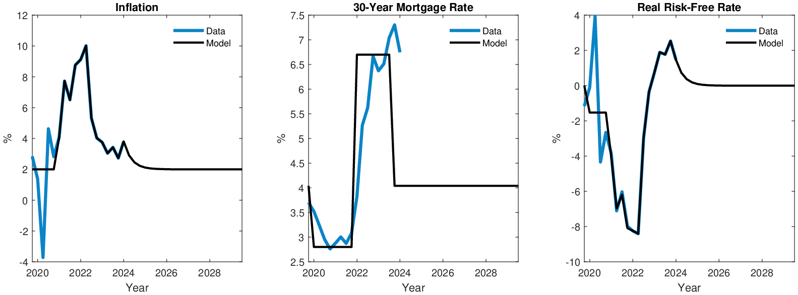
Notes: Inflation is annualized quarterly change in CPI. Mortgage rate is 30-year fixed rate mortgage from Freddie Mac. Real risk-free rate is Federal Funds Effective rate minus inflation.
Figure 5 presents the results of simulating the three phases of the Great Inflation in our structural model. The blue line presents the baseline findings for the U.S. where all mortgages are FRM (the black line represents the counterfactual U.S. economy with ARM mortgages discussed in Section 4.3). The Great Inflation shocks generate significant and persistent effects on house prices, housing transactions, debt, and consumption dynamics over the period. The three shocks are able to generate a peak house price response roughly 75% of that in the data and an increase in mortgage debt outstanding similar to that in the data over 2020-2021.
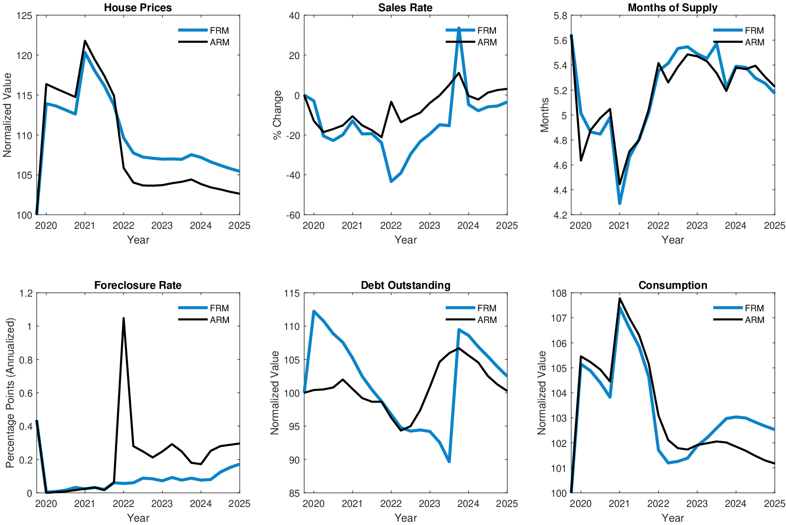
Notes: Black line is U.S. model with ARM. Blue line is U.S. model with FRM.
General equilibrium forces. General equilibrium effects play an important role for these result. To illustrate this, we consider the partial equilibrium counterfactual where house prices are held fixed in response to the same shocks. As shown in Appendix Figure B.5, if house prices do not rise there is a large increase in the homeownership rate. This indicates the main additional demand comes from marginal renters, who can afford to move into housing given the lower mortgage costs. The fall in the foreclosure rate is also less extreme. This emphasizes that foreclosures fall in to model due a combination of both lower minimum interest costs and by raising the price of housing for underwater sellers. In general equilibrium, reduced fire sale behavior of these households further amplifies the house price boom.
These aggregate dynamics are driven by a combination of all of the shocks, in the next section we isolate the effect of mortgage rates alone in driving price dynamics. Finally, we note that the consumption patterns during the period are fairly counterfactual. This partly due to a high degree of complementarity between housing and consumption. However, we are abstracting from all pandemic era restrictions so it is not surprising that the model does not generate a consumption decline. Indeed, Larkin (2024) estimates the consumption response to economic factors during the Covid recession was only about around 1%, rebounding before the end of 2020.
5.2 The role of mortgage rates in explaining house price movements
Before examining the role of different mortgage \(\mathit{structures}\), we first establish the importance of mortgage rates themselves in driving U.S. pandemic-era house price movements.17 To isolate this channel, we decompose the sources of house price movements in our model. We compare the full simulation with all pandemic-era shocks (to interest rates, inflation, rents, income, and transfers) against a counterfactual simulation that includes only the changes to mortgage rates.
Figure 6 (Panel A) presents the results of this decomposition for the U.S. economy. The baseline model is shown with the dot-dashed line, the mortgage rate only model with the solid line, and the dashed line shows the data. Changes in the mortgage rate alone can account for a remarkable share of the house price dynamics following the pandemic. The initial mortgage rate cut in 2020 explains nearly all of the initial house price boom in the model. In 2021, the house price rises further as a result of the increase in inflation (which lowers the real rate). Across the full 2020-2022 boom period, our decomposition attributes between 45% (data) and 60% (model) of the total house price increase to mortgage rate changes. This exercise establishes that monetary policy, transmitted directly through mortgage rates, was a first-order driver of recent U.S. house price dynamics.
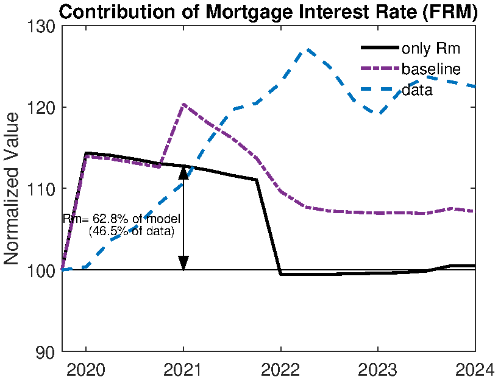
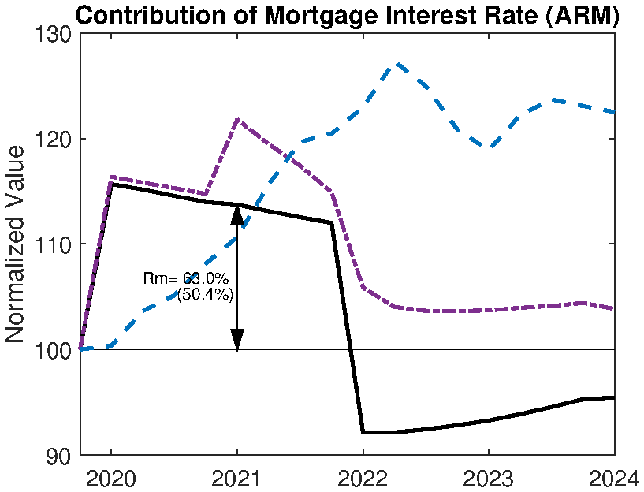
Notes: data is Case-Schiller house price series. Model is U.S. model with FRM. Panel a: black line is model with only mortgage rate shock. Dashed dot is all other shocks. Panel b show model with alternative search parameters.
Search frictions. We also investigate the importance of the endogenous housing market frictions for our results. To do this we vary the parameters that govern the search market and consider counterfactual house price movements. We consider two alternatives. One where the matching function becomes highly elastic, such that variations in the posted price have a bigger impact on the matching probability. In particular, we set \(\gamma _{s}=0.99\) and \(\gamma _{b}=0.2\). Second, we lower the search cost, the disutility of a posting a house that fails to sell, to \(\xi =0.00014\), which is 10% of the standard calibration. Finally, we consider the combination of both. The results are presented in Figure 7 Panel A.
Increasing the elasticity of the matching function substantially reduces the volatility of house prices with respect to the mortgage rate shocks. The boom in prices in 2020 is close to zero. The size of the decline in prices is also smaller. The difference between the dynamics of the FRM and ARM mortgage market is still present (Appendix Figure B.8). One interpretation of this calibration is that it reduces the costliness of the matching friction for distressed sellers, as a smaller reduction in the posted price substantially increases the probability of selling. This rules out fire sale behavior. Removing the disutility cost of selling increases the magnitude of the initial boom. Households are now more willing to post a high price and face not selling, raising prices in equilibrium. One implication not considered here, but arguably consistent with the data and model, is that remote work made the cost of delayed selling lower and that this explains part of the boom in U.S. house prices. Finally, we see that once the housing market is very elastic, lower search costs are no longer relevant as the probability of failing to sell is low.
Overall, the decomposition shows that search frictions matter for house price dynamics and for the quantitative magnitude of the house price boom and decline. Interestingly, the relative behavior across ARM and FRM mortgage markets is fairly consistent. We still get evidence of lock in with FRMs. However, to quantitatively evaluate the contribution of the mortgage market structures to the Great inflation house price movements it is crucial to model these search frictions.
5.3 How FRMs shaped the U.S. response
While mortgage rates were the main driver of the boom in house prices, in this section we ask if the specific type of mortgage contract was critical in shaping the dynamics, particularly during the tightening phase. To demonstrate this, we now compare the simulated response of the U.S. economy under its actual FRM regime to a counterfactual where all mortgages are ARMs.
Figure 5 presents the results. The U.S. ARM counterfactual reveals that the mortgage contract type is a first-order determinant of the economy’s response to monetary tightening. Initially, during the 2020-21 easing, both regimes experience a house price boom as lower rates increase affordability. The contribution of the mortgage interest rate alone is very similar across the FRM and ARM economies, as exhibited in the decomposition in Panel B of Figure 6. However, the dynamics diverge sharply once policy tightens in 2022. In the FRM regime (blue line), house prices moderate but remain persistently elevated. In contrast, the counterfactual ARM economy (black line) experiences a more severe bust, with prices falling significantly below their steady-state level. This is accompanied by a dramatic spike in foreclosures under the ARM regime, a dynamic that is absent in the FRM case.
The key mechanism driving this divergence is a “housing lock-in” effect, which is unique to the FRM structure (for state level evidence see Fonseca and Liu (2024)). When prevailing rates rise, existing FRM homeowners are disincentivized from moving and forfeiting their low-rate mortgages. This suppresses the supply of homes for sale, limits price declines, and creates path dependency. To illustrate the differential path dependence between FRM and ARM we perform an additional experiment where we compare two different sized mortgage interest rate cuts (our baseline cut from 4% to 2.8% and a larger cut from 4% to 1.3%) in the two economies. Figure 7 (Panel B) displays the house price response to the two cuts across the FRM and ARM economies. The amplification of the initial cut is non-linear in the ARM (dashed and dotted lines) economy relative to the FRM. After that we see the path dependency generated by FRM mortgage. While the mortgage rate returns to the steady state value (4 percent) in both cases the house price remains elevated following the bigger boom in the FRM economy (whereas the house price is much closer in the ARM cases). The key driver of this difference is substantially depressed sales rate (Panel C). In 2021, the sales rate is almost 40 percent below its steady state value following the big boom, but only 25 percent following the smaller rate cut (whereas the sales rate in the ARM cases are similar).
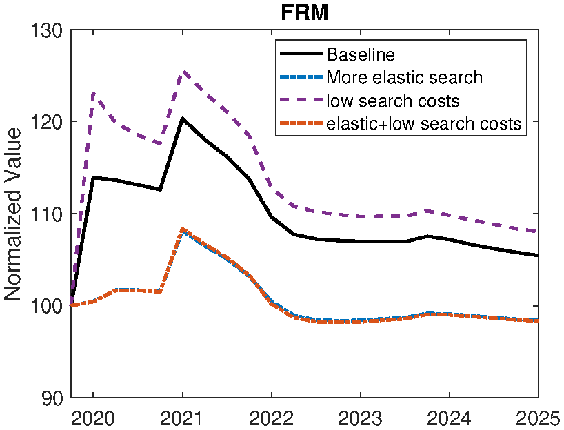
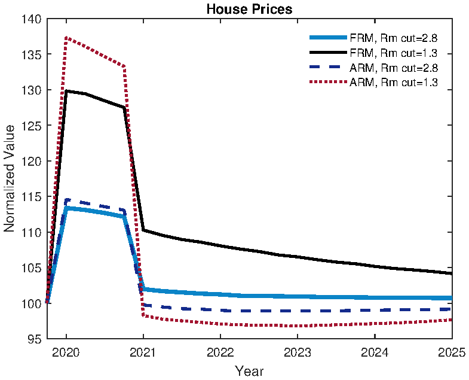
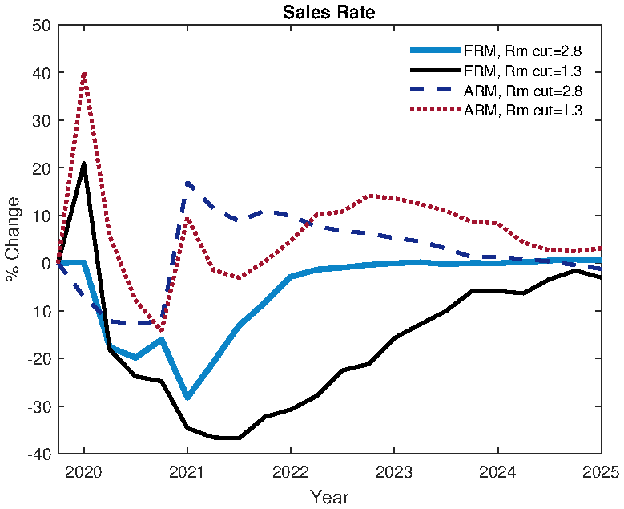
Notes: Panel a shows model with alternative search parameters. Panels b and c show ARM and FRM model in response to different initial rate cuts. After four quarters the mortgage rate returns to the steady state.
While this baseline simulation successfully isolates the importance of the mortgage contract, it is clear from a comparison with the data that it under-predicts the full magnitude and persistence of the house price boom. This discrepancy is not surprising, as our baseline shocks do not account for other, non-monetary forces at play during the pandemic, most notably the widely documented increase in housing demand driven by the shift to remote work (Gupta et al. (2022),Morgane (2025)).
Further, empirical evidence suggests that household expectations regarding mortgage rate increases in the U.S. did not update as rapidly as implied by our baseline specification. Figure 8 (Panel A), displays changes in household expectations of mortgage rates at current, one-year ahead, and three-year ahead horizons, with changes measured relative to 2019 expectations. The data is from the New York Federal Reserve’s Survey of Consumer Expectations (SCE) and measures subjective expectations, rather than market implied rates. The evolution of expectations exhibits several notable patterns. Expectations declined in 2020 and fell further in 2021. By 2022, expectations had begun to rise, yet the one-year forward expected mortgage rate remained close to its 2019 level. The data reveals an upward-sloping yield curve, with mortgage rates expected to increase further over longer horizons. In 2023, expectations rose substantially across both near-term and three-year horizons. Our baseline specification assumes rates rise to 6.8 percent at the beginning of 2022. However, the SCE evidence suggests household expectations required considerable time to reach this level.
To create a more quantitatively realistic laboratory for validating the model’s predictions, we therefore construct an extended model. This version introduces two additional shocks. First, to incorporate the gradual updating process in the SCE data, we change the path of the mortgage interest rate: in 2022, mortgage rates increase to 5.5 percent with an expected duration of four quarters. In 2023, a further increase occurs, raising rates to 6.8 percent. All other shocks are revealed in 2022, consistent with the baseline specification. Second, we introduce a temporary housing preference shock that arrives in 2021. This shock is calibrated to match the observed peak in house prices (thus, we treat this shock as a residual to explain the peak variation in house prices not explained by the other shocks). This is essentially a persistent increase in the weight on housing in household utility function (\(\phi _{h}).\) This increased is assumed to last 16 quarters, resolving after the monetary policy stance has normalized. By incorporating this demand shock, the extended model provides a more realistic representation of the environment in which households made their decisions.
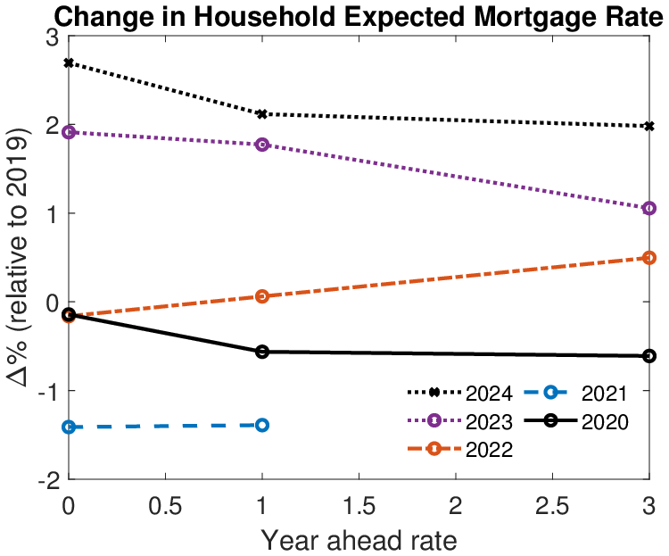
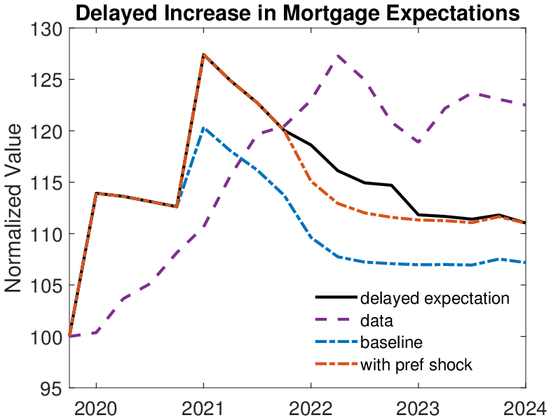
Notes: Panel a is data from the NYSCE on household expectations of the future interest rate. Panel b is the U.S. extended model which feature intermediate tightening to 5.5% for 4 quarters in 2022, before a further rate rise in 2023.
Figure 8 (Panel B) presents the house price dynamics in the extended model. As anticipated, the delayed rise in mortgage rates substantially improves model fit. During 2022, house prices remain approximately 5 percentage points higher under the delayed expectations specification. In 2023, the price path converges closely to that of the model with a housing preference shock, indicating limited additional propagation effects. The extended model performance suggests an important role for gradual updating of household expectations, particularly in explaining housing market dynamics through 2023. In the next section, we use this extended framework to test whether the “lock-in” mechanism is present in the U.S. data.
5.4 Evidence for the Mechanism from U.S. Household Behavior
Using the extended model, we now investigate if the main mechanism — the housing lock-in effect — is consistent with U.S. data over this period. We provide three pieces of evidence from household expectations, aggregate market activity, and search behavior that confirm the model’s predictions. We view this as both as validating evidence for the particular model economy that we’ve constructed (incomplete markets, heterogeneous agents, search frictions, etc) and confirming that our model is an appropriate laboratory for our policy analysis.
Expected Tenure and the “Lock-In” Effect. A direct test of the lock-in channel comes from homeowners’ own stated plans. This expected tenure measure partially captures how well households are matched to their current housing situations and provides insights into mortgage lock-in effects. For example, when interest rates temporarily increase while a household holds a FRM, they are more likely to remain in their current home in the short run to benefit from the lower mortgage rate.18 However, over time, households may become misallocated from their preferred housing stock. This misallocation reduces expected duration at longer horizons when mortgage rates are anticipated to return to lower levels and the value of holding the FRM diminishes. Figure 9 plots data on expected housing duration from the SCE.19 The post-2022 data reveals a striking pattern: the share of homeowners expecting to remain in their homes for 2-5 years increased, while the share expecting to stay for more than 10 years fell substantially. This is direct evidence of temporary lock-in: households anticipated remaining in place while rates were high but planned to move once the lock-in effect dissipated over the longer term.
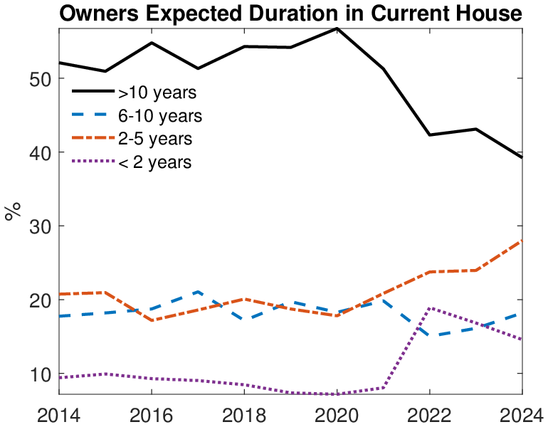
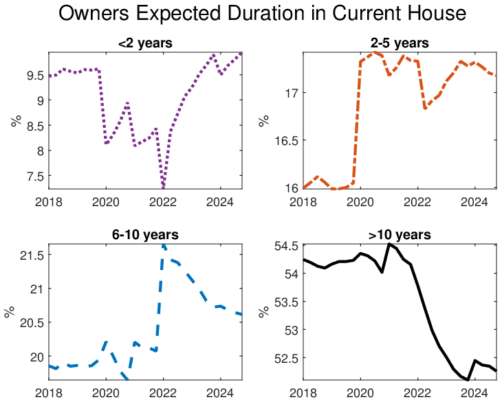
Notes: Panel a is data on expected duration in current house is from NYSCE housing module. Panel b is model simulated panel of actual duration of households in current house. At each time \(t\) duration refers to duration given the current shock regime.
The right panel of Figure 9 shows that our model replicates this dynamic with very well.20 When we simulate a panel of households and calculate their moving probabilities, we find the same shift: the 2022 tightening prompts households to delay moves, boosting the “2-5 years” category while reducing long-term tenure expectations. This close correspondence provides compelling evidence that our model is capturing the financial incentives driving household decisions.
Aggregate Transactions and Time on Market.
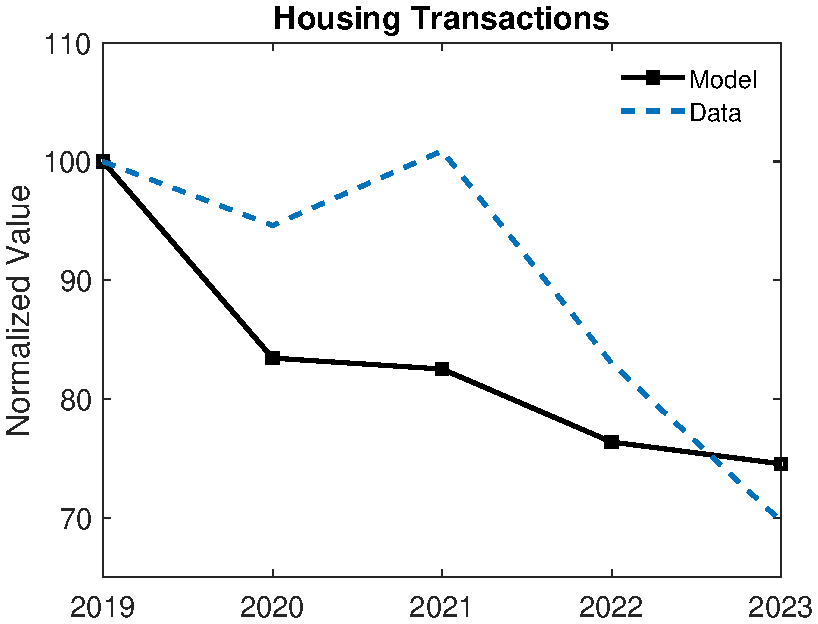
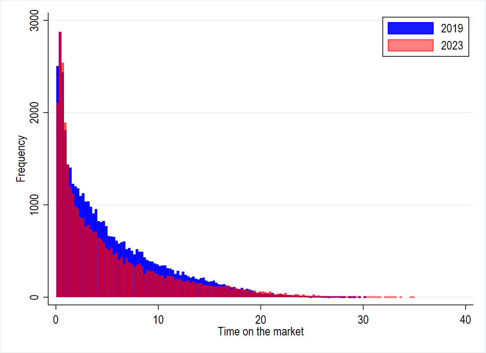
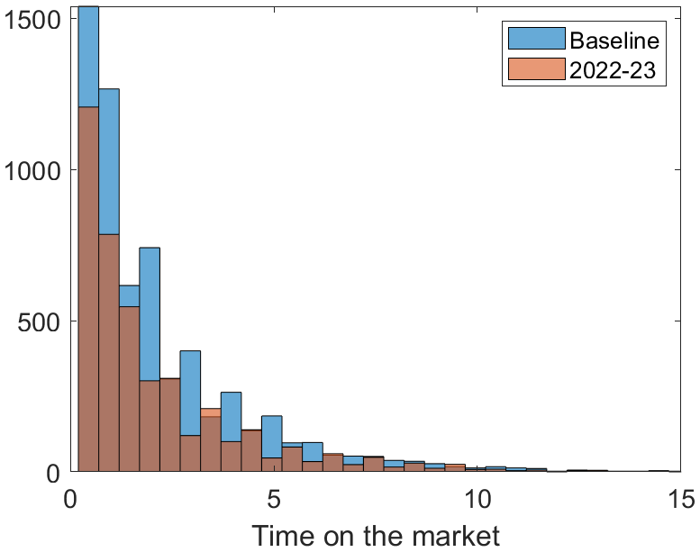
Notes: Panel a is aggregate transactions data from U.S. Census Bureau. Panel b is time on the market from CoreLogic dataset (see Appendix D for details). Panel c is model generated data from extended U.S. model for sales in 2018-19 and sales in 2022-23. Transaction in model is the average of sales and purchases.
The lock-in effect should also manifest in market-level outcomes. If many homeowners are locked-in, aggregate transaction volumes should fall, and those who do sell should be highly motivated. Figure 10 confirms both predictions. Panel A shows the sharp drop in U.S. housing transactions beginning in 2022, a dynamic our model also captures. The model predicts a 25% decline in transactions by 2023 — only slightly less than the 30% decline observed in the data. Panel B shows that among the smaller pool of sellers, the distribution of “time on market” shifted markedly toward shorter durations in the data, a feature our model also reproduces as motivated sellers price their homes to sell quickly. While the model cannot fully replicate the pattern in the data, it does reproduce the decline in longer posting times (Panel C). Additionally, given housing lock-in effects, sellers who do choose to sell prefer to do so quickly, posting in submarkets that offer a high probability of selling the property. In Figure B.9 in the Appendix we also show the model is able to reproduce the time on the market distribution in Sweden. In particular, consistent with Sweden being an ARM economy there is less evidence of a tilting in the time on the market distribution in both the data and model.21
Taken together, this evidence from household expectations, transaction volumes, and selling times validates the main mechanisms of our model. With the model empirically grounded in the U.S. case, we now broaden our scope to see if our framework can explain the divergent housing market outcomes observed internationally.
5.5 Explaining cross-country housing dynamics
Having established the relevance of our model mechanisms with validation using U.S. data, we now test the power of our framework to explain the international puzzle that motivated this paper. Can differences in mortgage structures account for the divergent house price paths observed in Canada, Sweden, and the U.K.?
To answer this, we conduct the same simulation exercise for each country, feeding in their country-specific shock paths (see Figure 11 and Appendix Figure B.10) and, importantly, impose the prevailing mortgage market structures. These are drawn from the national statistics agency and central bank for each country. Relative to the U.S., inflation peaked in Sweden and the U.K. a little later and mortgage tightening was delayed. We try to capture these features and assume all countries experience 8 quarters at the highest rate level.22
For clarity of comparison and to focus on the propagation due to the mortgage market, we keep the steady state the same as for the U.S. analysis.23 Sweden is modeled as a pure ARM regime. For Canada and the U.K., which feature shorter-term fixed rates, we model their “hybrid” structures using a stochastic mortgage reset probability calibrated to match their average mortgage durations (see Table 4).
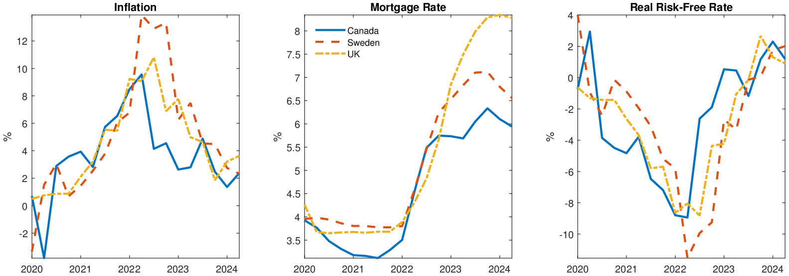
Notes: Data sources are CPI inflation: Canada (Statistics Canada). Sweden (SCB). U.K. (ONS). Mortgage rate: Canada, 5-year mortgage rate (Canada Mortgage and Housing Corporation). Sweden, floating rate housing loans (Riksbank). U.K.,.2 year fixed rate mortgage with 75% LTV (Bank of England). Risk free rate, policy rate minus inflation (BIS).
5.5.1 Baseline Model Results
We begin with our baseline model, which isolates the effect of monetary shocks and mortgage contracts. The solid lines in Figure 12 display the results. The model is successful at qualitatively matching the cross-country patterns.24 It correctly predicts that the U.S. and Canada, with their greater reliance on fixed-rate debt, would experience larger booms and more persistent price increases. In contrast, it predicts a much sharper decline for ARM-dominated Sweden, bringing its house prices to a lower level post-2022, consistent with the data.25
| Baseline | Extended Canada | |||||
| U.S. | Canada | Sweden | U.K. | Short | Long | |
| Stochastic mortgage reset \((\delta)\) | 0.00 | 0.08 | 1.00 | 0.11 | 0.29 | 0.05 |
To show the importance of mortgage structure in matching the cross-country patters, we simulate an “alternate mortgage” experiment where we impose ARM for the U.S. and FRM for the other three countries. The results are displayed in the dot-dashed lines in Figure 12. The mortgage structure is not just qualitatively important, but quantitatively significant. As shown in Table 5 (Panel A), simply modeling the correct mortgage arrangement, as opposed to a counterfactual one, improves the model’s fit to the observed price decline in every country. On average across the sample, the correct mortgage structure closes the gap between the model and the data by 42%.26
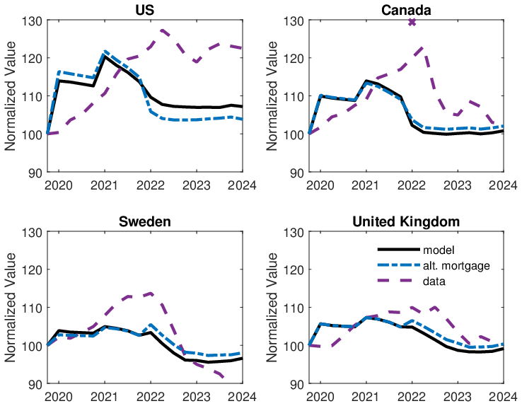
Notes: Dashed line is data: U.S. is Case-Schiller. Other countries BIS. Solid line is baseline. Dashed dotted line is alternative mortgage arrangement. In U.S. this is ARM. In other countries it is FRM. The peak house price in Canada in 2022.Q1 appears extremely high and unreasonably transitory. When comparing to the model to the data we take an average of the quarter before and afterwards.
| Boom | Decline | ||||
| % explained | improved fit | ||||
| actual | actual | alternative | (%) | (p.p.) | |
|
|||||
| U.S. | 74.4 | 172.4 | 236.0 | 46.8 | 4.4 |
| Canada | 60.6 | 74.1 | 64.1 | 27.8 | 1.8 |
| Sweden | 36.0 | 38.9 | 31.6 | 10.7 | 1.8 |
| U.K. | 72.9 | 96.8 | 82.9 | 81.4 | 1.3 |
| |Average| | 61.0 | 95.6 | 103.7 | 41.7 | 2.3 |
|
|||||
| U.S. | 100.4 | 153.7 | 195.3 | 43.6 | 2.8 |
| Canada | 102.9 | 87.2 | 76.7 | 44.9 | 1.9 |
| Sweden | 100.1 | 65.6 | 56.0 | 21.6 | 2.3 |
| U.K. | 103.4 | 97.1 | 82.6 | 83.6 | 1.3 |
| |Average| | 101.7 | 100.1 | 102.6 | 48.4 | 2.1 |
Notes: % explained is share of boom or bust model explains. Boom is peak. Bust is minimum value before 2023 Q4, except for U.S. Extended Model where minimum is 2022 Q4. Improved fit is the share of the distance from the data of the decline of the alternative mortgage, explained by using the actual mortgage arrangements. P.p. is this value in percentage points.
5.5.2 Extended model results
Next, we analyze the results from our extended model, which adds country-specific housing preference shocks calibrated to match the observed price booms. By accounting for the demand surge, this framework provides an even tighter quantitative test. The results for the model with just the addition of a housing preference shock are presented in the Appendix. Further, we add country specific features that help us better match the data. We now briefly discuss these before evaluating the results.
Multiple fixed rate mortgage durations. In most of the countries there appears to be one predominant form of mortgage contract and limited variation in the medium run. An exception to this is Canada, which saw a significant switch from longer duration (five year FRMs) to ARMs during the period 2020-23 (Figure 2). This is likely to be an important channel for understanding the pass through of monetary policy. To capture this we extend the model to have multiple mortgage contracts. In particular, we assume there are two stochastic FRMs of different durations. In steady state the market share and durations match the average shares pre-2020, with 40 percent of mortgages at the shorter duration and 60 percent at the longer duration. The calibration of these FRMs is show in Table 4. 27 We feed in a changing share of mortgages allocated to either contract exogenously upon the taking out of a new mortgage. The time series matched the distribution of new mortgages of different durations in the data.28
Longer expected tightening. In Sweden, motivated by the extremely large decline in prices we introduce an extended monetary tightening regime. We assume that in 2023, a new shock arrives and households perceive mortgage rates will remain at elevated levels for an additional year before returning to the steady-state values. All other structural shocks remain unchanged from the baseline specification.
Figure 13 presents the results. By construction, the model now captures the price peaks in all countries. Further, we explain a larger share of the decline in house prices. Panel A, presents the results for Canada. The introduction of multiple mortgage durations does not affect the dynamics significantly during the boom period. In the bust however, the extended model correctly predicts a larger decline in house prices. The key mechanism driving this result is the increased share of households holding shorter-duration mortgages when interest rates rise, amplifying the transmission of monetary policy through the housing market.29 This finding highlights the importance of heterogeneity in mortgage market structure for understanding cross-country differences in housing market responses to monetary policy. Panel B, presents the results for Sweden. As anticipated, a longer expected period of tightening causes house prices to decline upon realization of this shock. The magnitude of the decline is substantial, bringing the model-generated series considerably closer to the empirical decline observed in the data. This result emphasizes the critical importance of expectations formation even within an ARM setting, given that the additional tightening is anticipated to occur in 2024 rather than immediately realized. Panel C present the results for the U.K.. In this case we only add a small housing preference shock to capture the boom and no further extensions. The model does an extremely good job of capturing the dynamics of house prices in the U.K. in this period.
Overall, the extended shock specifications significantly improve the model’s ability to match cross-country housing market dynamics. Most importantly for our analysis, these extensions enhance the interaction with mortgage market institutional arrangements. We again calculate the contribution of the mortgage structure to the size of the decline. The results are presented in Table 5 (Panel b). All three extended models explain a greater proportion of the observed decline in house prices. Furthermore, each specification demonstrates improved explanatory power when incorporating actual mortgage market arrangements relative to counterfactual alternatives. On average, the correct mortgage contract specification brings the model approximately 50 percent closer to matching the empirical data and still explain about 2 percentage points of the house price decline, providing further robust evidence for our central hypothesis. Note that the percentage points explained in the U.S. case appears mechanically lower because we measure the decline as of the end of 2022, in keeping with the timing of the extended model. The other countries see an improvement on this measure. Thus overall the extended models are able to capture much of the housing dynamics in these four countries while also signaling a key role for mortgage market structure.
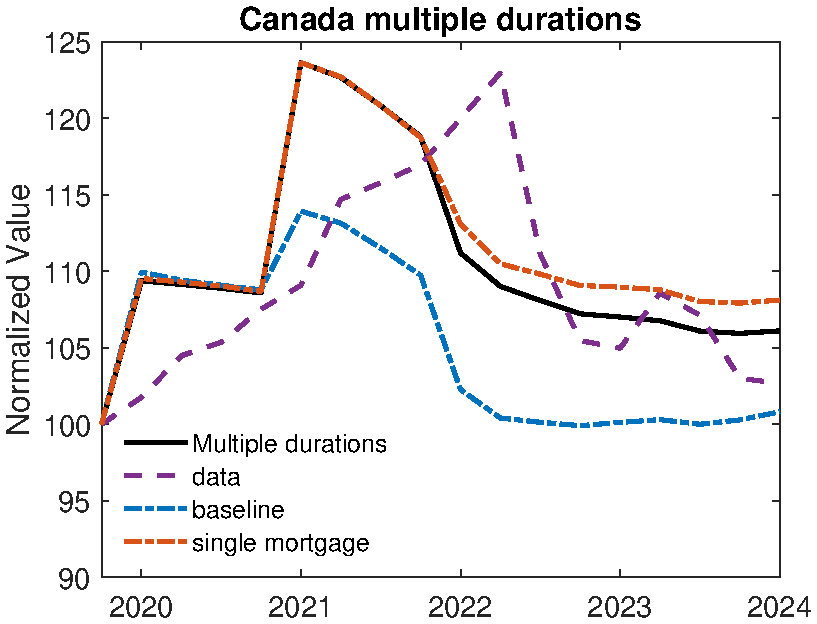
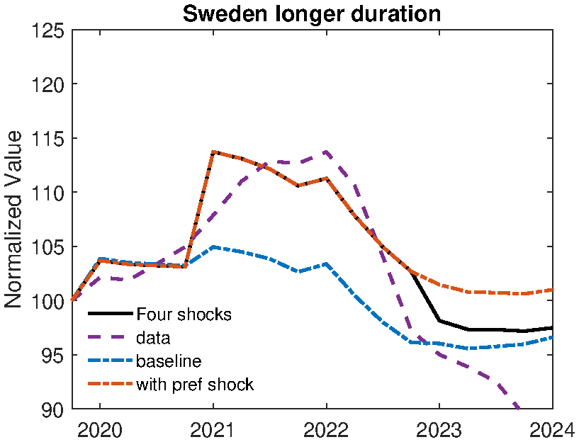
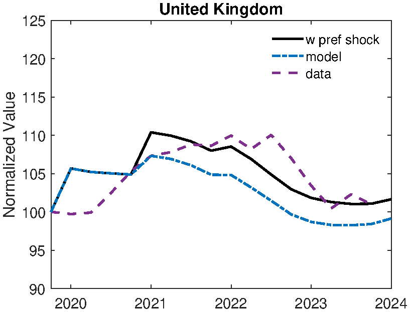
6 Distributional consequences and welfare
The unprecedented swings in interest rates and house prices following the pandemic created winners and losers across the wealth and income distribution across all four countries in our analysis. In this section, we use our model to analyze these distributional effects. First, we identify the groups that gained and lost the most in each country. Second, we quantifying for every household in the four countries what the welfare value of having a fixed-rate mortgage was during this period. For this analysis, we use the house price path from our extended model with preference shocks and incorporate the government transfers that were a key feature of the pandemic response.
6.1 Winners and Losers from the Great Inflation
Who were the main beneficiaries of the 2020-21 monetary easing and subsequent tightening? A consistent pattern of winners and losers emerges across all countries, though the magnitude of the effects varies with the size of the local housing boom. Table 6 presents the consumption-equivalent welfare gains for different household groups at the point each new shock arrives.
Two key findings are immediately apparent from the 2020 and 2021 results. First, low-income homeowners were the largest beneficiaries of the initial monetary easing. In the U.S., the bottom 25% of owners saw a welfare gain of 2.31 in 2020, rising to 3.32 in 2021 — substantially larger than the 1.60 and 2.39 gains for the average owner. This same pattern holds in Canada (1.54 vs. 1.02 in 2020) and the U.K. (0.82 vs. 0.53). The house price boom disproportionately benefited the most financially constrained owners by relaxing credit constraints and reducing default risk.
Second, renters consistently lost out in the initial phase. In 2020, renters saw their welfare fall in Canada (-0.16) and the U.K. (-0.27), while their gains in the U.S. (0.53) and Sweden (0.02) were dwarfed by those of homeowners. Surging house prices made the prospect of homeownership more distant, representing a significant welfare loss for this group. These results highlight what appears to be a universal trade-off: monetary policy that boosts the economy via housing wealth tends to widen the welfare gap between property owners and renters.
| 2020 | 2021 | 2022 | 2020 | 2021 | 2022 | ||
| U.S. | Sweden | ||||||
| Owners (average) | 1.60 | 2.39 | 2.63 | Owners (average) | 0.52 | 0.93 | 0.26 |
| Owner (bottom 25 pct) | 2.31 | 3.32 | 3.38 | Owner (bottom 25 pct) | 0.72 | 1.30 | 0.60 |
| Owners (top 10 pct) | 1.45 | 2.16 | 2.41 | Owners (top 10 pct) | 0.46 | 0.80 | 0.09 |
| Renters | 0.53 | 1.34 | 2.06 | Renters | 0.02 | 0.03 | -0.65 |
| Canada | U.K. | ||||||
| Owners (average) | 1.02 | 1.55 | 0.97 | Owners (average) | 0.53 | 0.60 | 1.03 |
| Owner (bottom 25 pct) | 1.54 | 2.23 | 1.46 | Owner (bottom 25 pct) | 0.82 | 0.87 | 1.25 |
| Owners (top 10 pct) | 0.90 | 1.38 | 0.77 | Owners (top 10 pct) | 0.45 | 0.49 | 0.91 |
| Renters | -0.16 | 0.34 | 0.87 | Renters | -0.27 | 0.08 | 0.57 |
Notes: Consumption equivalent value at realization of shock for each economy. Uses model with housing preference shock price path, but no preference realization. Transfers received are included.
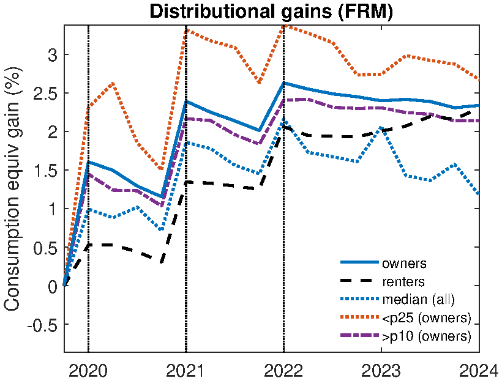
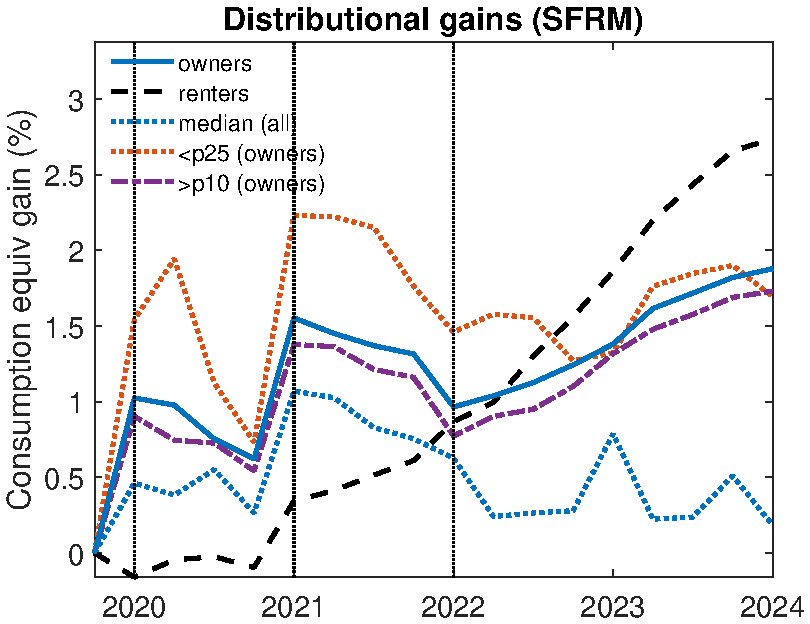
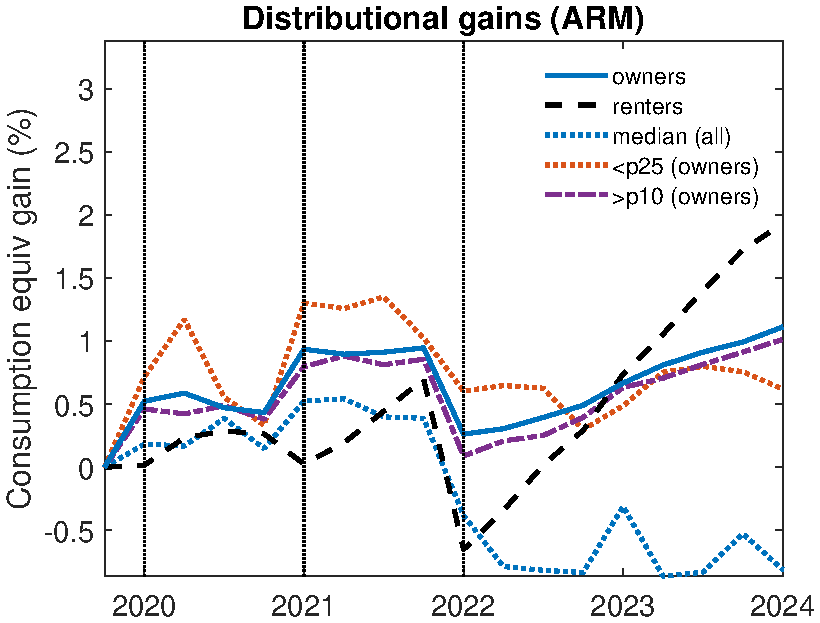
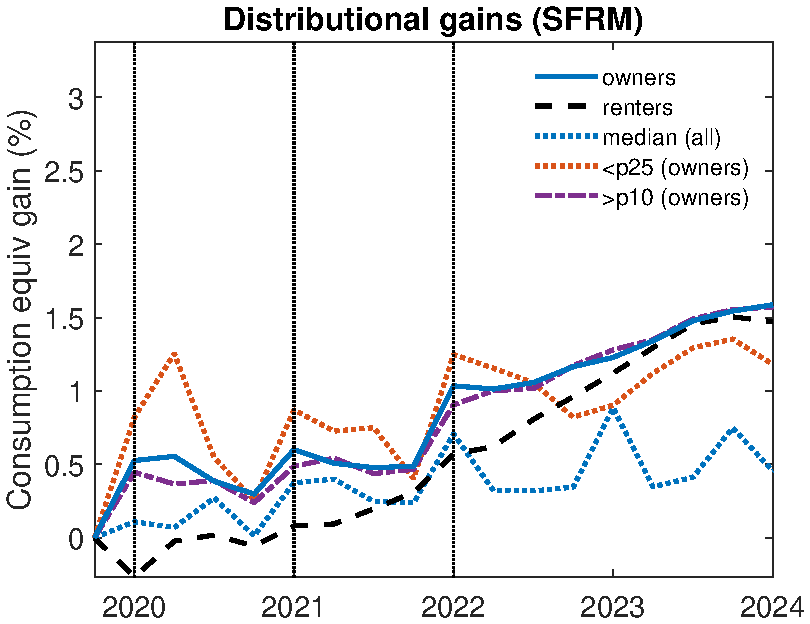
6.2 The role of mortgage structure in shaping welfare
While the identity of winners and losers was consistent across countries, the persistence of their welfare gains was significantly impacted by the local mortgage structure. The 2022 findings in Table 6, which reflect the onset of monetary tightening, make this clear.
A comparison between the pure-FRM U.S. and the pure-ARM Sweden provides the cleanest illustration of this mechanism.30 The welfare gains for U.S. homeowners proved remarkably durable. Even after the Federal Reserve began its aggressive tightening in 2022, the bottom 25% of owners still posted a 3.38% CEV gain in 2022, even higher than in 2021. The FRM contract acted as powerful insurance, shielding mortgagors from rising interest payments. In stark contrast, the gains for Swedish homeowners evaporated. The welfare gain of the average owner fell from 0.93% CEV in 2021 to just 0.26% CEV in 2022, as higher rates were immediately passed through in their ARM-dominated market.
Canada and the U.K., with their hybrid systems, fall between these two extremes. In Canada, the average owner’s gain fell from 1.55% CEV to 0.97% CEV, while in the U.K., welfare for homeowners actually rose from 0.60% CEV to 1.03% CEV, as the price boom’s effects continued to dominate the slower pass-through of rate hikes.
Figure 14 provides a dynamic view of these effects, plotting the evolution of welfare gains over the entire period. In the U.S. (Panel A), the welfare lines for all homeowner groups remain high and relatively flat after the tightening shock arrives in 2022, showcasing the insulating effect of the FRM. The opposite is true for Sweden (Panel C), where homeowner welfare sharply collapses as soon as rates rise. The panels for Canada (B) and the U.K. (D) clearly their intermediate status, with a more muted decline in welfare than in Sweden but without the full resilience of the U.S.
Taken together, the static and dynamic cross-country evidence demonstrates that the mortgage regime is a primary determinant of how potentially exposed household welfare is to monetary tightening.
6.3 The Value of a Fixed-Rate Mortgage
Given this insurance benefit, what was having an FRM worth to households during this period? To answer this question, we compute the “perfect foresight value” of having an FRM contract relative to the actual mortgage arrangement in each country (ARM in Sweden; Sweden; the actual hybrid contract in Canada/U.K.). For the U.S., since FRM is the actual mortgage arrangement, we compute this relative to an ARM. The perfect foresight value is defined as:
\[ \begin{aligned} & V^{PF}_{s,1}(a_{t},\bar{R}_{m}M_{t},h_{t},z_{t})=\\ & \sum ^{^{S}}_{s=1}\sum ^{^{s_{T}}}_{t=s_{1}}\beta ^{t-1}\left [V^{PF}_{s,t}(a_{t},(\bar{R}_{m,t},M_{t}),h_{t},z_{t})-\beta V^{PF}_{s,t+1}(a_{t+1},(\bar{R}_{m,t+1},M_{t+1}),h_{t+1},z_{t+1})\right]\\ & +\frac{\beta ^{^{S_{T}+1}}}{1-\beta}V(a_{S_{T}+1},\bar{R}_{m,S_{T}+1}M_{S_{T}+1},h_{S_{T}+1},z_{S_{T}+1}) \end{aligned} \]
where \(s\) is a shock period which lasts from period \(s_{1}\) to \(s_{T}\). There are \(S\) shock periods in total. This measure calculates the value of the 2020 allocation based on the complete path of choices that prevail after information becomes available. This approach captures the full benefit of an FRM, including the gains that accrue after rates rise in 2022.31
| U.S. | Canada | Sweden | U.K. | |
| Value in 2020 (CEQ %) | -0.19 | 0.00 | -0.06 | -0.01 |
| Perfect foresight value (CEQ %) | 0.39 | 0.13 | 0.22 | 0.11 |
| Perfect foresight value ($000s) | 3.08 | 0.96 | 1.73 | 0.88 |
| Mortgage rate difference (p.p.) | 0.18 | 0.06 | 0.10 | 0.05 |
Notes: Value in 2020 is average consumption equivalence difference for each household of being in FRM economy as opposed to ARM or actual country specific mortgage setting. Perfect foresight setting is also value in 2020, but includes ex post value of future shocks (see text for details). Also shown in dollar value and interest rate differential willing to pay to be in FRM economy during this episode.
Table 7 shows that the value of an FRM is highest in the U.S., at a consumption-equivalent of 0.39%, or approximately a $3,000 one-time payment. This reflects both the long duration of the FRM contract and the large initial rate cut in the U.S. In Sweden, the value is about half that (0.22% or $1,730), as the smaller rate cut and shorter tightening period diminish the relative benefit. The value is lower still in Canada (0.13%) and the U.K. (0.11%), where their existing shorter-term fixed mortgages already provide a close substitute, reducing the additional benefit of a full FRM. Although these figures appear relatively modest, they are comparable in magnitude to the product premium differences reported in Campbell and Cocco (2003).32
These modest average values, however, mask significant heterogeneity, as shown in Figure 15. In the U.S., the value of an FRM ranges from negative for some renters (who would prefer lower house prices) to over 3% of consumption for constrained homeowners. This spread is also present in Sweden, but less pronounced in Canada and the U.K., where the alternative mortgage contracts are less distinct from an FRM. This analysis highlights that while the average insurance premium may seem modest, for those who end up needing the insurance, the payoff from an FRM contract is substantial.
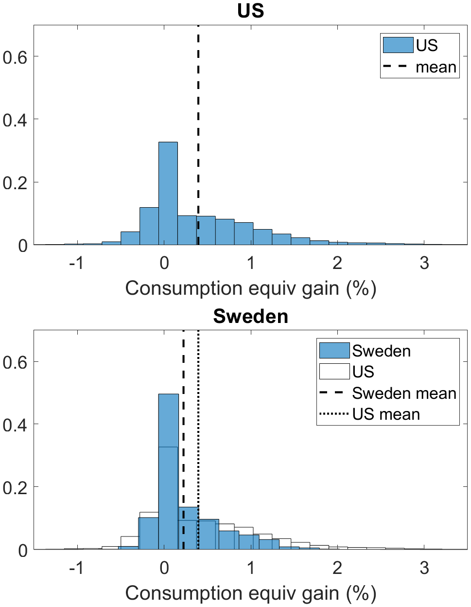
Notes: Consumption equivalent gain of being in FRM economy relative to ARM (U.S., Sweden) or country specific mortgage arrangements (Canada, U.K.). Calculated with perfect foresight value function. U.S. distribution shown in all panels as comparison. The distribution of the on impact value is shown in Figure B.13 in the Appendix.
7 Policy implications: the speed of tightening
Our finding that mortgage market structures impact the transmission of monetary policy has direct implications for the preferred path of interest rates set by central banks during a monetary tightening. If the pass-through of interest rates to households varies so dramatically across countries, does the optimal policy path for fighting inflation also depend on these structures? While solving for the optimal policy path is beyond the scope of this paper, in this section, we use our model to shed light on this question by evaluating two different policy paths: a “short and sharp” tightening versus a “long and gradual” one.
7.1 A policy counterfactual
We construct a stylized policy experiment, shown in Figure 16 (Panel A). The economy begins with a monetary easing shock. Households expect that, given the monetary policy stance, inflation will soon increase and persist for 8 quarters. After one year, a new shock arrives, and the monetary authority tightens to bring inflation back to its target. We consider two alternative tightening strategies, designed to have the same cumulative impact on inflation (as implied by a standard New Keynesian Phillips Curve):33
- Short & sharp (solid line): The mortgage rate is raised to 6.7% for 8 quarters before returning to normal. This mirrors our baseline U.S. experiment.
- Long & gradual (dashed line): The rate is raised to a lower peak but is held there for twice as long (16 quarters).
We analyze the welfare implications of these two paths in both an FRM regime (like the U.S.) and an ARM regime (like Sweden).
7.2 Mortgage structure determines the preferred policy path
The results, shown in Panel B of Figure 16, reveal that the preferred (using a utilitarian welfare metric) policy is regime-dependent. In the ARM regime, welfare is largely unaffected by the choice of tightening path. Since interest rates pass through to households almost immediately regardless, the specific timing and duration of the policy have little additional impact. A policymaker in an ARM-dominant country would be relatively indifferent between the two strategies.
In the FRM regime, however, a clear distinction emerges: the “short and sharp” tightening is strongly preferred. Under this policy, house prices fall by less and consumption remains higher (see Appendix Figure B.14). The intuition lies with the lock-in effect and constrained households. A shorter period of high rates minimizes the probability that homeowners with valuable low-rate mortgages and high marginal propensities to consume are hit by an idiosyncratic shock (e.g. a job loss) that forces them to move or refinance. By getting the pain over with quickly, the central bank allows these households to preserve their valuable mortgage asset. Put succinctly, avoiding exposure to the rate rise is more feasible the shorter the duration of the tightening.
While a longer tightening horizon eventually leads to lower house prices, which benefits renters, these discounted future gains are not nearly large enough to offset the immediate welfare cost of prolonged high rates for the large stock of existing homeowners. This experiment demonstrates that in FRM economies, there is a strong case for a swifter, more decisive tightening to stabilize inflation.
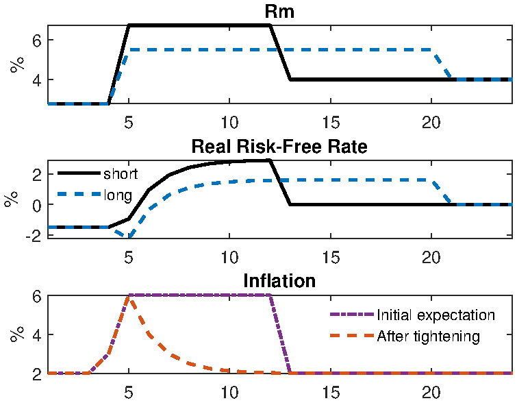
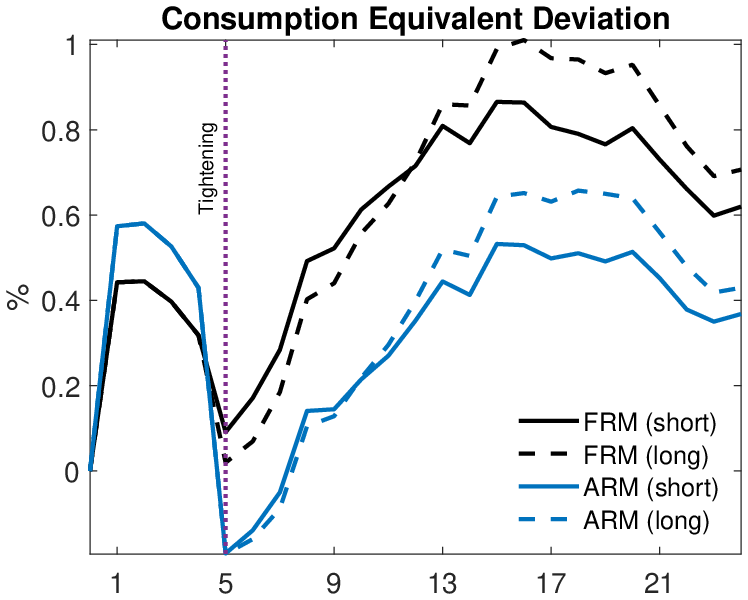
Notes: Panel a, solid line is short tightening path, dashed line is long tightening path. Panel b is consumption equivalent welfare value. Solid line is long tightening path, dashed line is short path. Black line for FRM case, blue line is ARM case.
8 Conclusion
The Great Inflation of 2021-24 exposed developed economies to their most volatile monetary conditions in over four decades, combining unprecedented interest rate swings with the highest inflation rates since the early 1980s. In this paper, we demonstrate that the structure of a country’s mortgage market was a first-order determinant for housing market dynamics and household welfare. Our analysis yields four main findings.
First, we show that monetary policy transmitted through mortgage rates was a primary driver of U.S. house price dynamics over this period, with our model attributing 45% of the house price boom to the initial pandemic-era rate cuts. Second, our cross-country analysis reveals that the prevalence of ARMs versus FRMs can explain a significant portion of why different countries’ housing markets responded differently over this period. Economies dominated by ARMs, such as Sweden, exhibit greater sensitivity to interest rate changes and experienced larger house price busts. In contrast, FRM regimes, like the U.S., generate significant path dependence. The “lock-in” effect from the low-rate period helps explain the surprising resilience of U.S. house prices in the face of aggressive monetary tightening. Third, these aggregate dynamics have distributional consequences. We show that low-income homeowners were the largest beneficiaries of the initial low-rate environment, particularly in FRM regimes where these gains were largely shielded from the subsequent tightening. Renters generally lost out as high house prices reduced housing affordability. This highlights the equity trade-offs that exist for monetary policy operating through the housing channel. Finally, our findings have significant implications for policymakers. The welfare costs of monetary tightening are generally larger in ARM regimes, where households face a more direct pass-through of higher interest rates. Furthermore, the optimal monetary policy rule may be regime-dependent. Our analysis suggests that FRM-dominant economies may benefit from a strategy of more aggressive but shorter-duration policy tightening, which minimizes the welfare losses for financially constrained homeowners.
In conclusion, this paper demonstrates that understanding the institutional details of mortgage markets is key for determining the transmission of monetary policy, the evolution of housing markets, and the distribution of welfare during periods of economic turbulence. While our model successfully captures many key aspects of recent housing market dynamics, it also suggests avenues for future research. The model points to the importance of additional factors—including shifts in housing preferences and expectations formation—for fully explaining the observed magnitude of house price movement. Micro founding these features seems an important line of research. Further, our analysis treats mortgage market arrangements as entirely exogenous, staying agnostic about the institutional forces that generate cross-country differences in mortgage structures. Although we argue this assumption is a useful benchmark, endogenizing mortgage choice in the household problem would enhance our understanding of the mechanisms we identify. We leave this for future research.
9 References
Almgren, M., Gallegos, J.-E., Kramer, J. and Lima, R. (2022). Monetary policy and liquidity constraints: Evidence from the euro area. American Economic Journal: Macroeconomics, 14 (4), 309–340.
Andersen, S., Campbell, J. Y., Nielsen, K. M. and Ramadorai, T. (2020). Sources of inaction in household finance: Evidence from the danish mortgage market. American Economic Review, 110 (10), 3184–3230.
Berger, D., Guerrieri, V., Lorenzoni, G. and Vavra, J. (2017). House prices and consumer spending. The Review of Economic Studies, 85 (3), 1502–1542.
—, Milbradt, K., Tourre, F. and Vavra, J. (2021). Mortgage prepayment and path-dependent effects of monetary policy. American Economic Review, 111 (9), 2829–2878.
Bianchi, J., McKay, A. and Mehrotra, N. (2024). How should monetary policy respond to housing inflation?
Blanchard, O. J. and Bernanke, B. S. (2024). An Analysis of Pandemic-Era Inflation in 11 Economies. Working Paper 32532, National Bureau of Economic Research.
Bolhuis, M. A., Cramer, J. N. and Summers, L. H. (2022). The coming rise in residential inflation. Review of Finance, 26 (5), 1051–1072.
Calza, A., Monacelli, T. and Stracca, L. (2013). Housing finance and monetary policy. Journal of the European Economic Association, 11 (s1), 101–122.
Campbell, J. Y., Clara, N. and Cocco, J. F. (2015). A model of mortgage default. The Journal of Finance, 70 (4), 1495–1554.
—, — and — (2021). Structuring mortgages for macroeconomic stability. The Journal of Finance, 76 (5), 2525–2576.
— and Cocco, J. F. (2003). Household risk management and optimal mortgage choice. The Quarterly Journal of Economics, 118 (4), 1449–1494.
Chambers, M., Garriga, C. and Schlagenhauf, D. E. (2014). Did Housing Policies Cause the Postwar Boom in Home Ownership? In Housing and Mortgage Markets in Historical Perspective, NBER Chapters, National Bureau of Economic Research, Inc, pp. 351–385.
Chaumont, G. and Shi, S. (2022). Wealth accumulation, on-the-job search and inequality. Journal of Monetary Economics, 128, 51–71.
Choi, S., Jeong, K. and Jeong, K. (2025). Asymmetric mortgage channel of monetary policy: Refinancing as a call option. Working paper.
Clarida, R. H. (2025). Post-Pandemic Global Inflation, Disinflation, and Central Bank Policy Responses: A Review of the Facts, Empirical Findings, and their Implications for Monetary Policy Framework Assessments. Working Paper 33885, National Bureau of Economic Research.
Corbae, D. and Quintin, E. (2015). Leverage and the foreclosure crisis. Journal of Political Economy, 123 (1), 1–65.
Corsetti, G., Duarte, J. B. and Mann, S. (2021). One money, many markets. Journal of the European Economic Association, 20 (1), 513–548.
Di Maggio, M., Kermani, A., Keys, B. J., Piskorski, T., Ramcharan, R., Seru, A. and Yao, V. (2017). Interest rate pass-through: Mortgage rates, household consumption, and voluntary deleveraging. American Economic Review, 107 (11), 3550–88.
Diaz, A., Jerez, B. and Rincon-Zapatero, J. P. (2023). Housing prices and credit constraints in competitive search. The Economic Journal, 134 (657), 220–270.
Eeckhout, J. and Sepahsalari, A. (2023). The effect of wealth on worker productivity. The Review of Economic Studies, 91 (3), 1584–1633.
Eerola, E. and Maattanen, N. (2018). Borrowing constraints and housing market liquidity. Review of Economic Dynamics, 27, 184–204.
Eichenbaum, M., Rebelo, S. and Wong, A. (2022). State-dependent effects of monetary policy: The refinancing channel. American Economic Review, 112 (3), 721–61.
Favilukis, J., Ludvigson, S. C. and Van Nieuwerburgh, S. (2017). The macroeconomic effects of housing wealth, housing finance, and limited risk sharing in general equilibrium. Journal of Political Economy, 125 (1), 140–223.
Flavin, M. and Nakagawa, S. (2008). A model of housing in the presence of adjustment costs: A structural interpretation of habit persistence. American Economic Review, 98 (1), 474–95.
Fonseca, J. and Liu, L. (2024). Mortgage lock-in, mobility, and labor reallocation. The Journal of Finance, 79 (6), 3729–3772.
—, — and Mabille, P. (2025). Unlocking mortgage lock-in: evidence from a spatial housing ladder model. Working paper.
Fornaro, L. and Romei, F. (2022). Monetary Policy during Unbalanced Global Recoveries. CEPR Discussion Papers 16971, C.E.P.R. Discussion Papers.
Garriga, C. and Hedlund, A. (2020). Mortgage debt, consumption, and illiquid housing markets in the great recession. American Economic Review, 110 (6), 1603–1634.
—, Kydland, F. E. and Å ustek, R. (2017). Mortgages and monetary policy. The Review of Financial Studies, 30 (10), 3337–3375.
—, Manuelli, R. and Peralta-Alva, A. (2019). A macroeconomic model of price swings in the housing market. American Economic Review, 109 (6), 2036–72.
Gertler, M. and Karadi, P. (2015). Monetary policy surprises, credit costs, and economic activity. American Economic Journal: Macroeconomics, 7 (1), 44–76.
Greenwald, D. (2018). The mortgage credit channel of macroeconomic transmission. Working paper.
Gupta, A., Mittal, V., Peeters, J. and Van Nieuwerburgh, S. (2022). Flattening the curve: Pandemic-induced revaluation of urban real estate. Journal of Financial Economics, 146 (2), 594–636.
Guren, A. M., Krishnamurthy, A. and McQuade, T. J. (2021). Mortgage design in an equilibrium model of the housing market. The Journal of Finance, 76 (1), 113–168.
Hedlund, A. (2016a). The cyclical dynamics of illiquid housing, debt, and foreclosures. Quantitative Economics, Vol. 7(1), 289–328.
— (2016b). Illiquidity and its discontents: Trading delays and foreclosures in the housing market. Journal of Monetary Economics, Vol. 83, 1–13.
— (2019). Failure to launch: Housing, debt overhang, and the inflation option. American Economic Journal: Macroeconomics, 11 (2), 228–74.
Jordà, Ò. (2005). Estimation and inference of impulse responses by local projections. American economic review, 95 (1), 161–182.
Kaplan, G., Mitman, K. and Violante, G. L. (2020). The housing boom and bust: Model meets evidence. Journal of Political Economy, 128 (9), 3285–3345.
Karahan, F. and Rhee, S. (2013). Geographical reallocation and unemployment during the great recession: The role of the housing bust. Working Paper.
Koeniger, W., Lennartz, B. and Ramelet, M.-A. (2022). On the transmission of monetary policy to the housing market. European Economic Review, 145, 104107.
Kuhn, M. and Rios-Rull, J.-V. (2020). 2016 update on the u.s. earnings, income, and wealth distributional facts: A view from macroeconomics. Working paper.
Larkin, K. (2024). Robust consumption inference. Working paper.
Menzio, G. and Shi, S. (2010). Block recursive equilibria for stochastic models of search on the job. Journal of Economic Theory, 145 (4), 1453–1494.
— and — (2011). Efficient search on the job and the business cycle. Journal of Political Economy, 119 (3), 468–510.
Morgane, R. (2025). The spatial and distributive implications of working-from-home: a general equilibrium model. Working paper.
Nakamura, E. and Steinsson, J. (2018). High-frequency identification of monetary non-neutrality: the information effect. The Quarterly Journal of Economics, 133 (3), 1283–1330.
Ngai, L. R. and Sheedy, K. D. (2020). The decision to move house and aggregate housing-market dynamics. Journal of the European Economic Association, 18 (5), 2487–2531.
— and — (2024). The ins and outs of selling houses: Understanding housing-market volatility. International Economic Review, 65 (3), 1415–1440.
— and Tenreyro, S. (2014). Hot and cold seasons in the housing market. American Economic Review, 104 (12), 3991–4026.
Piazzesi, M. and Schneider, M. (2016). Chapter 19 - housing and macroeconomics. Handbook of Macroeconomics, vol. 2, Elsevier, pp. 1547–1640.
Rouwenhorst, K. G. (1995). Asset pricing implications of equilibrium business cycle models. In Frontier of Business Cycle Research, 10, Princeton University Press.
Stock, J. H. and Watson, M. W. (2018). Identification and estimation of dynamic causal effects in macroeconomics using external instruments. The Economic Journal, 128 (610), 917–948.
Storesletten, K., Telmer, C. I. and Yaron, A. (2004). Consumption and risk sharing over the life cycle. Journal of Monetary Economics, 51 (3), 609–633.
Wright, R., Kircher, P., Julien, B. and Guerrieri, V. (2021). Directed search and competitive search equilibrium: A guided tour. Journal of Economic Literature, 59 (1), 90–148.
10 Online Appendix
10.1 Details of the model
This section presents the details of the model that were omitted in the main text.
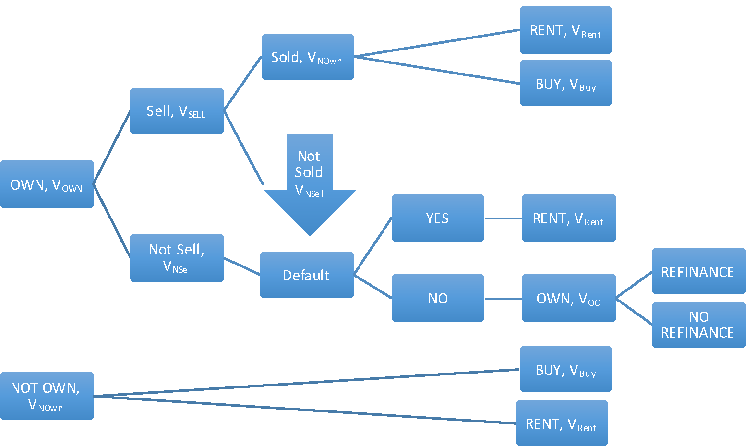
10.1.1 Household’s Dynamic Problem
Households take the paths of aggregate variable \(\{\pi _{t},w_{t},p_{ht},r_{at},R_{mt},q_{bt},T_{t}\}_{t\geq 0}\) and mortgage price functions \(\left \{q_{mt}(.)\right \} _{t\geq 0}\), as given. The household dynamic problem can be summarized by the timeline shown in Figure 17.
The household’s idiosyncratic state is cash on hand \(y\), the mortgage \(m\), current mortgage rate \(\overline{R}_{m}\), fixed rate duration \(d\), housing stock \(h\), persistent productivity \(z\), and credit flag \(f\). In recursive notation the value function of a household that owns a house in the beginning of the period and makes a regular payment makes decision on consumption, bond holdings, and mortgage debt payment:
\[ \begin{aligned} V^{pay}_{own}(y,(\overline{R}_{m},m,d),h,z,f & =0)=\max _{b^{\prime},c\geq 0,l\geq \underline{l}}u(c,h)+\\ & \beta \mathbb{E}\Biggl [(1-\delta _{s}(d))(W_{own}+R_{sell})(y^{\prime},(\overline{R}_{m},m^{\prime},d),h,z^{\prime},f^{\prime}=0)\\ & +\delta _{s}(d)(W_{own}+R_{sell})(y^{\prime},(R^{\prime}_{m},m^{\prime},d^{\prime}),h,z^{\prime},f^{\prime}=0)\Biggr] \end{aligned} \]
subject to
\[ \begin{aligned} c+ & \gamma p(h)+q_{b}b^{\prime}+l\leq y\\ m^{\prime}= & \left (\frac{m}{1+\pi}-l\right)(1+\overline{R}_{m}\cdot \textbf{1}[\delta _{s}=0]+R^{\prime}_{m}\cdot \textbf{1}[\delta _{s}=1])\\ y^{\prime}= & w^{\prime}e^{\prime}z^{\prime}+b^{\prime}+T^{\prime} \end{aligned} \]
Value function of a household who owns a house in the beginning of the period and chooses to refinance:
V^{refi}{own}(y,m,h,s,f=0)={m{},b{},c}u(c,h)+
subject to
\[ \begin{aligned} c+\gamma p(h)+q_{b}b^{\prime}+\frac{m}{1+\pi} & \leq y+q^{0}_{m}((R^{\prime}_{m},m^{\prime},d^{\prime}),b^{\prime},h,s)m^{\prime}\\ q^{0}_{m}((R^{\prime}_{m},m^{\prime},d^{\prime}),b^{\prime},h,s)m^{\prime}\leq & \vartheta p_{h}h\\ y^{\prime}=w^{\prime}e^{\prime}s^{\prime}+b^{\prime}+T^{\prime} \end{aligned} \]
Value function of a household with current bad credit is:
V_{own}(y,0,h,z,f=1)=_{b^{},c}u(c,h)+
subject to
\[ \begin{aligned} c+\gamma p(h)+q_{b}b^{\prime} & \leq y\\ y^{\prime}=w^{\prime}e^{\prime}s^{\prime}+b^{\prime}+T^{\prime} \end{aligned} \]
The value function of a renter is
V_{rent}(y,z,f)=_{b^{},c,a}u(c,a)+
subject to
\[ \begin{aligned} c+\gamma p(h)+q_{b}b^{\prime} & \leq y\\ y^{\prime}=w^{\prime}e^{\prime}z^{\prime}+b^{\prime}+T^{\prime} \end{aligned} \]
10.1.1.1 Buying and selling
The option value of selling a house is
\[ \begin{aligned} R_{sell}(y,(m,\bar{R}_{m},d),h,z,f) & =\max \Biggl \{0,\max _{p_{s}}\eta _{s}(\theta _{s}(p_{s},h))\times \\ & \left [(V_{rent}+R_{buy})\left (y+p_{s}-\frac{m}{1+\pi},z,0\right)-V_{own}(y,(m,\bar{R}_{m},d),h,z,f)\right]\Biggr \} \end{aligned} \]
subject to
p_{s}+y
The option value of buying a house is
R_{buy}(y,z,f)={0,{h,p{b}}{b}({b}(p_{b},h))}
subject to
\[ \begin{aligned} p_{b} & \leq \begin{cases} y-\underline{y} & \mathrm{if}\:f=0\\ y & \mathrm{if}\:f=1 \end{cases} \end{aligned} \]
where \(\underline{y}\) is the maximum mortgage the household can take out.
10.1.1.2 Default
Default decision (when household defaults it is always foreclosed and banks do not come after liquid assets of the household):
\[ \begin{aligned} W_{own}(y,(m,\bar{R}_{m},d),h,z,0) & =\max \Biggl \{V^{pay}_{own}(y,(\overline{R}_{m},m,d),h,z,f=0),V^{refi}_{own}(y,m,h,z,f=0),\\ & \Biggl (V_{rent}+R_{buy}\Biggr)\left (y+\max \left \{0,J^{t}_{REO}(h)-\frac{m}{1+\pi}\right \},z,1\right)\Biggr \} \end{aligned} \]
Value to banks of repossessing a house. The value to a lender of repossessing a house of size \(h\) is
\[ \begin{gathered}J^{t}_{REO}(h)=R^{t}_{REO}(h)-\eta h+\frac{1}{1+r_{t+1}}J^{t+1}_{REO}(h)\\ R^{t}_{REO}(h)=\max \left \{0,\max _{x_{s}\geq 0}\eta _{s}(\theta _{t}(x_{s},h))\left [(1-\gamma ^{REO})x_{s}-\left (-\eta p_{h}h+\frac{1}{1+r_{t+1}}J^{t+1}_{REO}(h)\right)\right]\right \} \end{gathered} \]
where \(\eta\) is the cost of holding onto the house (maintenance, property taxes, etc.), which we set to 0.007 (\(\eta =0.007\)) in our calibration and \(R^{t}_{REO}(h)\) is the option value of trying to sell the house in period \(t\).
10.1.1.3 Housing preference shock
The discrepancy between the size of the house price boom in the model and the data suggests additional non-economic factors were important. It is likely Covid had a substantial impact on housing demand, with evidence suggesting people relocated or demanded larger housing units (Morgane, 2025). While we are not primarily interested in explaining the house price boom, the size of the increase could be important for understanding the importance of mortgage arrangements during the decline. To capture these non-economic forces in a reduce form way we introduce a housing preference shock to all four countries. The shock is chosen to exactly match the boom in house prices in each country. It is essentially an increase in the value of \(\phi _{h}\). In the model the shock is assumed to arrives in 2021 and is expected to last for 16 quarters.34 This timing would appear to reasonably capture the late pandemic reorganization of household’s housing demand, related to factors such as increased expected prevalence of work from home.
The results are shown in Figure B.11. With the addition of the housing preference shock the model is able to do a very good job of matching the path of house prices for all four countries. It does a particularly good job of capturing the dynamics of Canada and the U.K., where the data is match almost perfectly. Table 5 Panel b, summarizes the results. By construction and up to model tolerance we almost perfectly match the boom in house price. We also now explain more of the house price decline in the data, this comes as prices start to fall as the end date of the preference shock moves closer. A side effect of this is that mortgage arrangement explain slightly less of the cross-country dynamics. In particular, in Canada the FRM model actually does a slightly better job of matching the decline. For the other countries the difference is less important. Overall, the correct mortgage arrangements still explain about 2 percentage points of the house price decline.
10.1.1.4 Distributional effect in the U.S.: ARM vs FRM
It is also interesting to consider the counterfactual distributional implications for the U.S. under FRM versus ARM mortgage arrangements. The mortgage rate loosening and tightening, and the resulting path of house prices, generates winners and losers across the distribution. Interestingly, the effect is non-monotonic in income. Further, the magnitude of this welfare effect differs by the structure of the mortgage market. We compare the consumption equivalent gain of the set of shocks for the median household, the average owner and renter, and for low- and high-income owners. For this exercise we exclude the transfers which generate strong distributional patterns raising the welfare of low-income households. We also ignore housing preference shocks.
The on-impact effect of the arrival of new shocks is summarized in Table C.5. The FRM results are in the left panel, the ARM results are in in the right panel. The welfare value of a perfect foresight path occurs on impact when a new shocks arrive in 2020, 2021 and 2023.35 The biggest winners of the period are low income homeowners. They benefit initially as prices rise, and this relaxes their credit constraints or the possibility of default. Home owners on average benefit, as does the median household. Renters suffer as the price of moving out of renting (a desirable outcome) has increased. Inflation further boosts the welfare of homeowners, by raising prices.
When rates increase, house prices drop, leading to an increase in the welfare of renters. With FRM mortgages the welfare of home owners remains fairly constant as their debt obligations have not increased and they are no more likely to face a forced sale. The pattern is different under ARMs. Initially, the welfare gains of the mortgage rate decline are larger, due to the greater increase in house prices and immediate decline in the present value of the debt. After the tightening in 2022, with ARMs owners welfare falls by more. This is due to the larger fall in prices, which are below the steady state value, and also the increased minimum mortgage payments and increased probability of foreclosure. Conversely, the lower house prices raise renter welfare by more. Overall, FRMs raise welfare relative to ARMs, during a period of tightening. In 2022, under FRMs the median household has positive welfare relative to steady state, whereas under ARMs welfare has roughly returned to its steady state value. Figure B.12 plots the paths of household welfare during the time period studied. The realization of shocks is shown with vertical lines. In these figures it is easy to see the persistence of welfare gains during the tightening period under the FRM regime.
10.2 Additional Figures
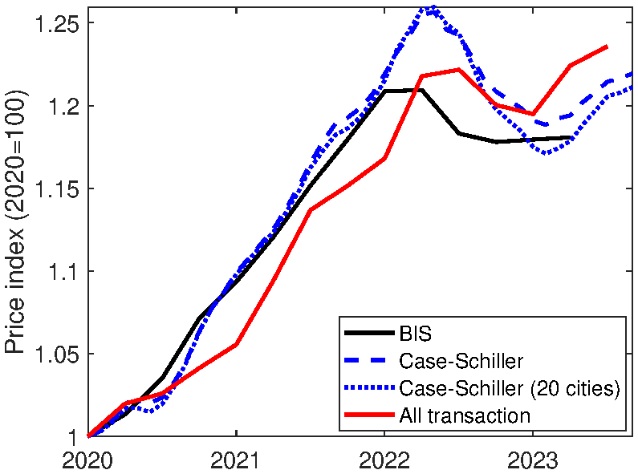
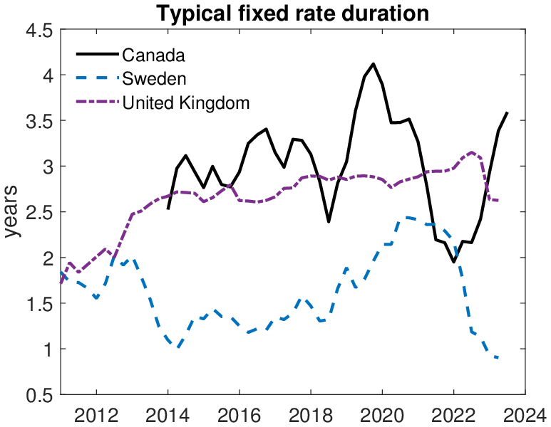
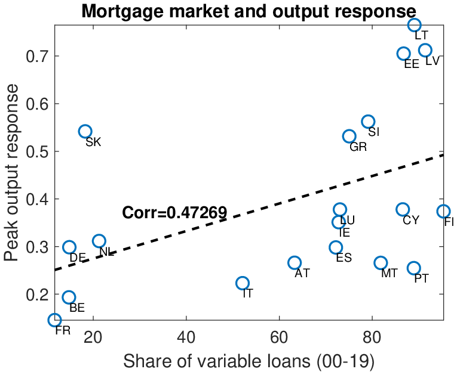
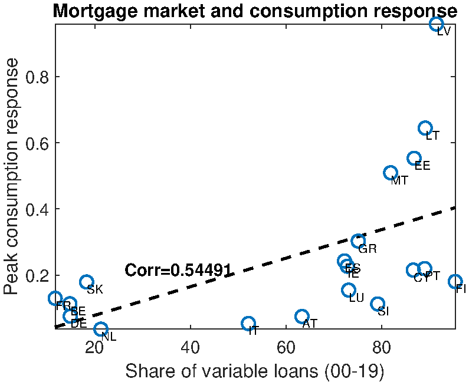
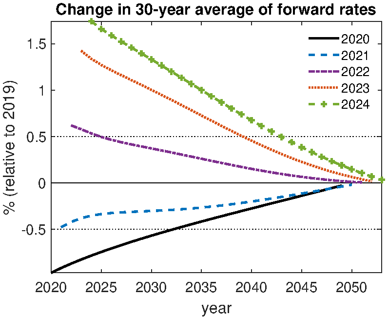
Notes: Reports calculations of the expected 30-year rate from time \(t\) to \(t+30\) into the future relative to value in 2019. Each line is the expectation in a given year. Data on yield curve from Federal Reserve and derived from Svensson model of nominal yield curve,
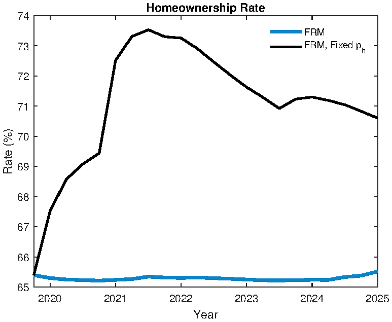
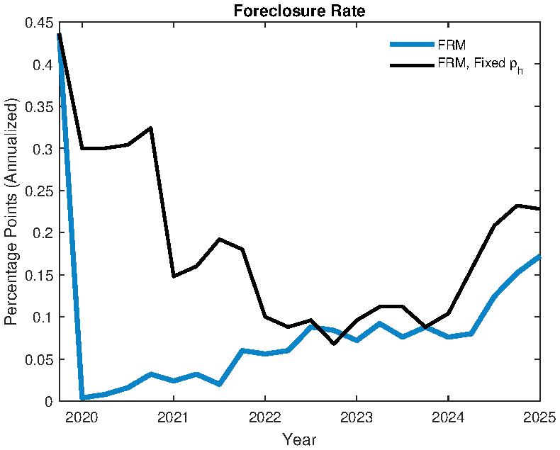
Notes: Panels a and b show FRM model in partial and general equilibrium.
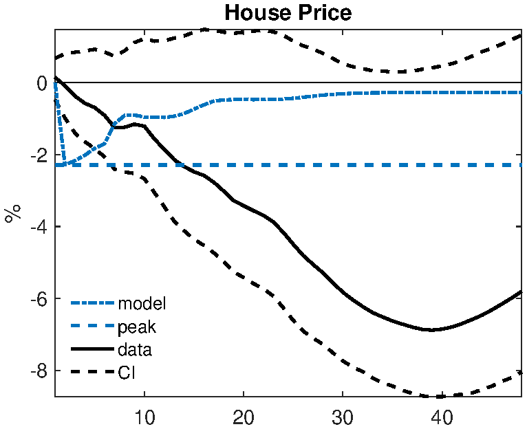
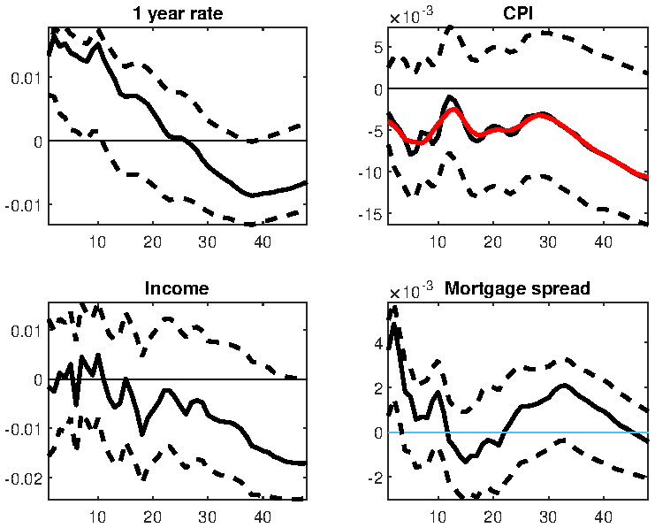
Notes: comparison of house price response in model to Gertler and Karadi monetary policy shock. Data is Case Schiller house price. Shocks fed into model are risk free rate, mortgage rate, inflation and income.
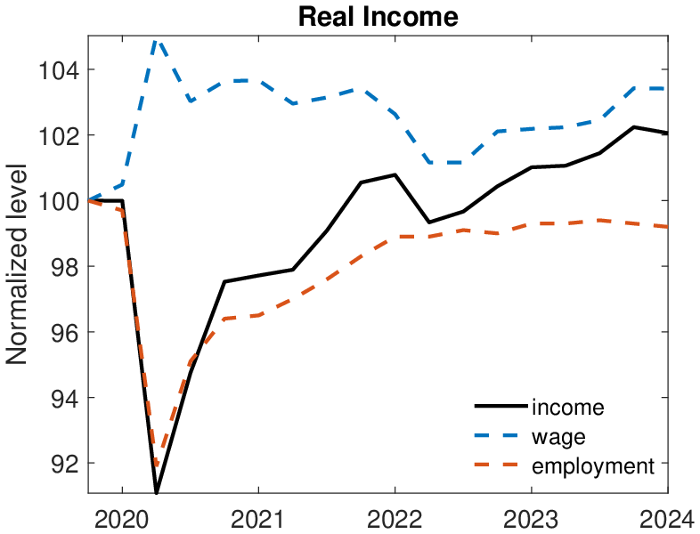
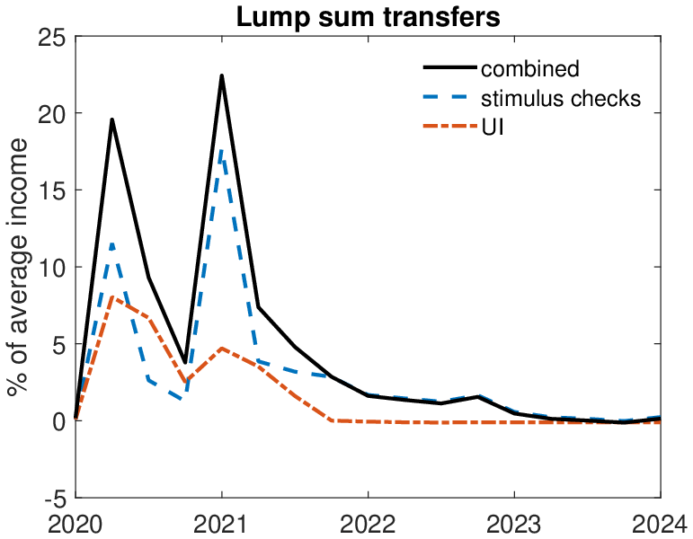
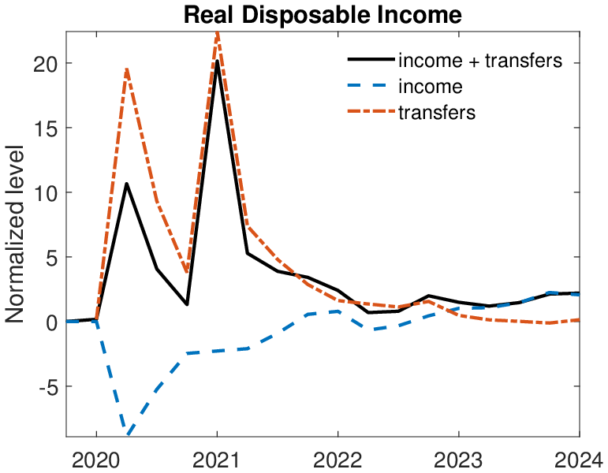
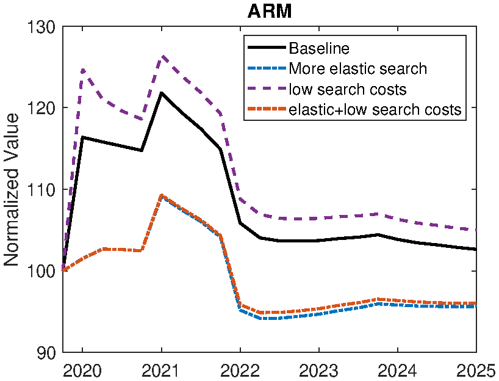
Figure: Figure B.8 – Role of Search Frictions
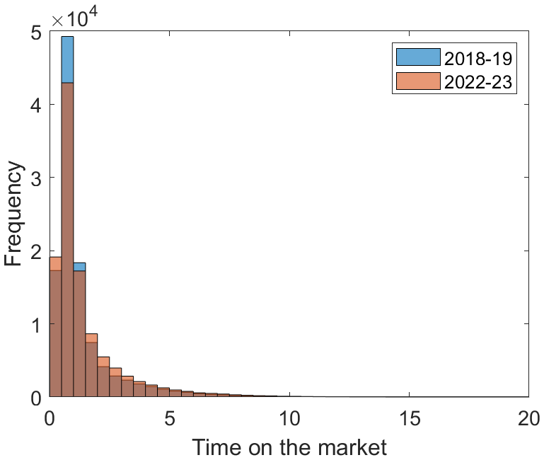
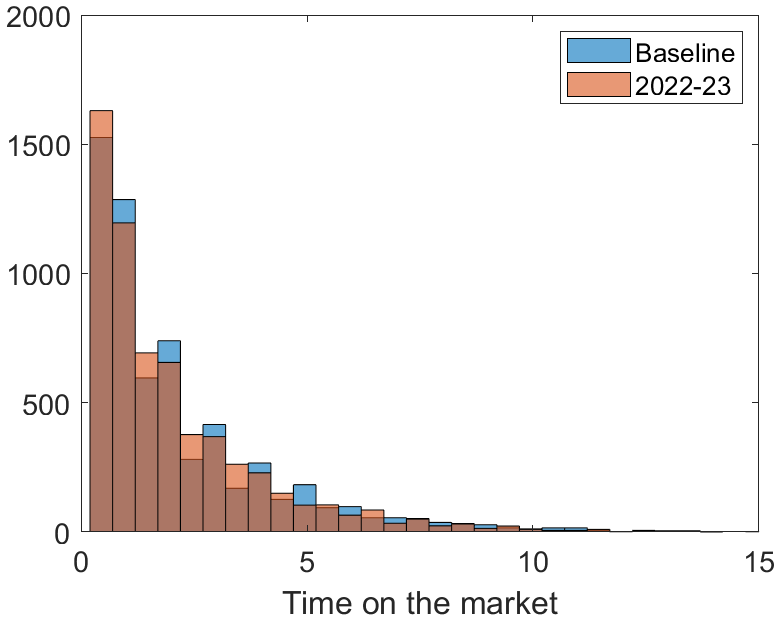
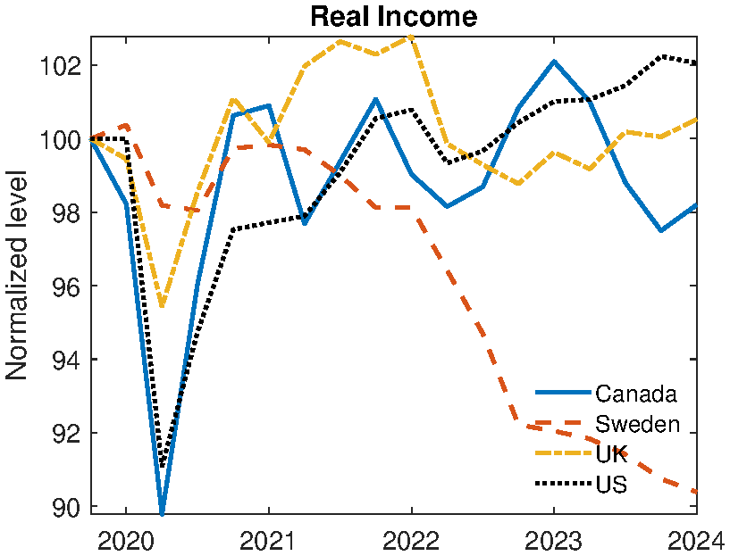
Notes: Dashed dotted line is model with addition of housing preference shocks that arrives in 2021 and lasts 16 quarters. The peak house price in Canada in 2022.Q1 appears extremely high and unreasonably transitory. When comparing to the model to the data we take an average of the quarter before and afterwards.
Notes: See Table C.5. Dashed vertical lines refer to shock realizations.
10.3 Additional Tables
| Probability of moving | |||
| LTV | 0–50 | 50–75 | 75–150 |
| Interest Rate Spread | 0.20*** | 0.17*** | 0.06*** |
| (0.01) | (0.01) | (0.00) | |
| Length of Homeownership | 0.12*** | 0.12*** | 0.09*** |
| (0.00) | (0.00) | (0.00) | |
Notes: Data from McDash. Interest rate spread is current rate - 30 year fixed mortgage
| Data | Model | |||||
| 2020 | 2024 | Change | 2020 | 2024 | Change | |
| < 2 years | 8% | 16% | 8 pp | 9% | 10% | 1 pp |
| 2–5 years | 19% | 28% | 9 pp | 16% | 17.5% | 1.5 pp |
| 6–10 years | 19% | 18% | –1 pp | 20.5% | 20.5 | 0 pp |
| > 10 years | 54% | 38% | -16 pp | 54.5% | 52% | -2.5 pp |
| Homeowners | Net wealth to | Housing wealth | Loan-to-Value | Mortgage Rate | |
| net national income | to ave. income | ||||
| U.S. | 65.1 | 4.7 | 3.9 | 58.7 | 4.1 |
| Canada | 66.5 | 4.3 | 4.3 | 71.9 | 4.2 |
| Sweden | 64.9 | 4.6 | 4.5 | 69.5 | 2.2 |
| U.K. | 65.0 | 4.8 | 4.0 | 72.0* | 1.8 |
Note: Net wealth to income from the World Incomes Database. *For the U.K. we report the median LTV
| Boom | Decline | ||||
| % explained | improved fit | ||||
| actual | actual | alternative | (%) | (p.p.) | |
|
|||||
| U.S. | 100.4 | 200.8 | 260.6 | 37.2 | 4.1 |
| Canada | 100.2 | 81.5 | 81.7 | 0.0 | 0.0 |
| Sweden | 100.2 | 51.1 | 45.3 | 10.6 | 1.4 |
| U.K. | 103.4 | 97.1 | 82.6 | 83.6 | 1.3 |
| |Average| | 101.2 | 107.6 | 102.6 | 32.9 | 1.7 |
Notes: % explained is share of boom or bust model explains. Boom is peak. Bust is minimum value before 2023 Q4, Improved fit is the share of the distance from the data of the decline of the alternative mortgage, explained by using the actual mortgage arrangements. P.p. is this value in percentage points.
| FRM | ARM | ||||||
| 2020 | 2021 | 2022 | 2020 | 2021 | 2022 | ||
| Median | 0.30 | 0.70 | 1.19 | 0.64 | 0.86 | 0.43 | |
| Owners | |||||||
| average | 1.19 | 1.47 | 1.72 | 1.54 | 1.70 | 0.64 | |
| bottom 25 pct | 1.80 | 1.99 | 1.97 | 2.23 | 2.24 | 0.85 | |
| top 10 pct | 1.05 | 1.32 | 1.60 | 1.38 | 1.54 | 0.53 | |
| Renters | |||||||
| average | -0.92 | -0.67 | 0.37 | -0.93 | -0.56 | 0.65 | |
Notes: Consumption equivalent welfare gain upon realization of each shock. Shown for different households in the distribution and for the U.S. FRM and ARM model. Results are for baseline model, with the receipt of transfers turned off.
10.4 Data Appendix
We use data from CoreLogic’s Real Estate Data MLS (Multiple Listings Service) accessed through the RADAR Data Warehouse. We take a random 1% sample of all observations to reduce computational burden. The data is collected directly from boards of realtors, and we use data from all boards of realtors that last reported in 2024, excluding data from discontinued boards, which may be duplicates of actively reporting boards. Next, we use the RADAR-created variable for deduplicating listings. Finally, we restrict to just sales listings, thus excluding rentals.
For our date variable, we use the standardized closing date of the sale. To construct our raw days on the market variable, we start with variable defined as “the total days the property has been on the market including previous listings for the same property that were expired or canceled within a recent timeframe.”. This variable is missing around 50% of observations, so we fill missing values with an additional variable defined as “number of days on the market (DOM) for listed property”. This gives us less than 0.1% missing observations. We drop observations greater than 150 or less than zero, and recode zero values to be equal to 1.
In order to control for external factors affecting time on the market, we residualize the log of time-on-the-market variable. To accomplish this, we regress it on controls for property type, a dummy for month of sale, living area, and state. In one specification, we then construct a linear trend adding a linear control for year, while in the other specification, we use year dummies.
Footnotes
Earlier work documented empirically a large effect of lock-in on labor mobility (Fonseca and Liu (2024))↩︎
Our approach to modeling search in the housing market builds on insights of the directed search literature, which started principally in the analysis of labor markets (e.g. Menzio and Shi (2010), Menzio and Shi (2011)) but has found important applications in other areas, including understanding household portfolios (e.g. Chaumont and Shi (2022), Wright et al. (2021), and Eeckhout and Sepahsalari (2023)). In the non-search housing literature, the most important references and recent contributions include Piazzesi and Schneider (2016), Favilukis et al. (2017), Berger et al. (2017), Garriga et al. (2019) and Kaplan et al. (2020).↩︎
Later work endogenized mortgage prices and studied optimal mortgage design (Campbell et al. (2015), Campbell et al. (2021)). Empirically, it has proven difficult to rationalize the variation in mortgage products held by household, without attributing some to the variation to behavioral biases (Andersen et al. (2020)).↩︎
While there is some variation in the path of prices reported by different series overall the pattern is fairly consistent. See Appendix Figure B.1↩︎
This is shown in Figure B.2 in the Appendix. The patterns confirm the approximate ordering of mortgage duration across the three countries.↩︎
The size of the average monetary policy response was related to the mortgage market structure of an economy or there could be time variation in the interest rate elasticity. Using shared monetary policy shocks avoids this issue. The common shock also serves as an additional guard against endogeneity.↩︎
This includes aggregate euro area output and the price level.↩︎
The series is converted to a monthly frequency following Gertler and Karadi (2015). This involves cumulating shocks over days in a month and dividing by the number of days. A change is then the difference in the exogenous announcements between month \(t\) and \(t-1\).↩︎
For the main data sources we follow Almgren et al. (2022). Therefore we follow their sample of years.↩︎
The EMF data is available on an annual basis since 2000, although the start date varies by country. The ECB data is available on a monthly basis since 2003.↩︎
The output response coefficient are exactly those from Almgren et al. (2022).↩︎
The low variable share group includes Slovakia, Germany, the Netherlands, Belgium and France.↩︎
The utility cost is meant to represent, among other things, the stigma associated with foreclosure and non-monetary moving costs.↩︎
This cost is meant to capture the various costs to the banks of selling foreclosed houses.↩︎
All values are normalized in terms of in terms of annual mean income.↩︎
In particular, we abstract from many aspects of the pandemic itself, e.g. lockdowns, supply chain issues, construction shortages, etc.↩︎
Figure B.6 in the Appendix shows the model does not generate excessive house price responses in response to monetary policy shocks, when compared with an IRF using the specification of Gertler and Karadi (2015).↩︎
Table C.1 in the Appendix provides cross sectional evidence from McDash consistent with lock-in correlated with a.) the interest rate spread and b.) LTV ratio.↩︎
Homeowners report their expected duration in their current houses. Home tenure expectations are reported annually in the SCE Housing Survey. This survey takes place in February.↩︎
For a summary of the quantitative fit see Table C.2in the Appendix.↩︎
We use third-party data that reports the duration properties were listed before selling. The data comes from CoreLogic’s Real Estate Data MLS. We residualize time on the market to control for changes in housing attributes not included in the model. In the model, we calculate time on the market as the number of quarters a property was posted prior to sale, plus an adjustment for market tightness in the quarter when the property was sold.↩︎
We also feed in income, rents and transfers. Canada had transfers of a similar magnitude to the U.S., whereas there was a much lower level of transfers in Sweden and the U.K.. The European countries income fell by less during 2020, but Sweden has experienced a large real terms decline subsequently.↩︎
This is further supported by the similarity in the key housing moments across the countries in our sample (See Table C.3 in Appendix).↩︎
The peak house price in Canada in 2022.Q1 appears extremely high and unreasonably transitory. When comparing to the model to the data we take an average of the quarter before and afterwards.↩︎
For the U.S., the data is from the Case-Shiller index, while the other three countries series are from the BIS.↩︎
The explained decline is 100-deviation from the data. This is a convenient measure as it can deal symmetrically with over and under explanation.↩︎
The shorter product had an expected duration of 0.8 years, while the longer one has a duration of 4.8 years. Allocation into a mortgage contract is exogenous and stochastic at the point of remortgaging. This can occur due to purchasing a home, refinancing, or the stochastic end of the current contract. It occurs after a household makes decisions in the housing market.↩︎
This rules out households endogenously choosing a duration that better suits their idiosyncratic state. This would be an interesting extension, but significantly more numerically demanding.↩︎
A subtler channel is the introduction of multiple durations does actually change the size of preference shock required to match the boom, which means mortgages play a larger role during the decline.↩︎
In the Appendix, Section A.1.4we consider the counterfactual of the distributional consequences in the U.S. under ARM mortgages. Qualitatively the results are similar.↩︎
An example path the perfect foresight value is shown in Figure B.13 in the Appendix. Note, we are abstracting from different rate paths that might occur under ARM and FRM regimes. This also differs from the standard comparison of FRM vs ARM mortgages which compute the value of insurance from FRMs in expectation.↩︎
Relative to the nominal rate, they report a premia of 1.8 percent for FRM mortgages and 1.7 for ARM mortgages.↩︎
In order to make this comparison, we abstract from heterogeneity and assume an NKPC as from the 3-equations New Keynesian model. Substituting the monetary policy into the Euler equation and then substituting into the NKPC yields the relationship between the path of the policy rate and inflation. We require that for a short rate increase \(R_{m,t+i}-R_{m,ss}\), the longer duration increase \(\hat{R}_{m,t+i}-R_{m,ss}\) is given by: {t}=-^{8}{i=1}^{i}(R_{m,t+i}-R_{m,ss})=-^{16}{i=1}^{i}({m,t+i}-R_{m,ss})↩︎
Technically, the shock arrive at the beginning of the second period. There is no change in the house price shock or households expectations in the third period starting in 2022.↩︎
After this welfare can change but excludes some past welfare gains or losses.↩︎